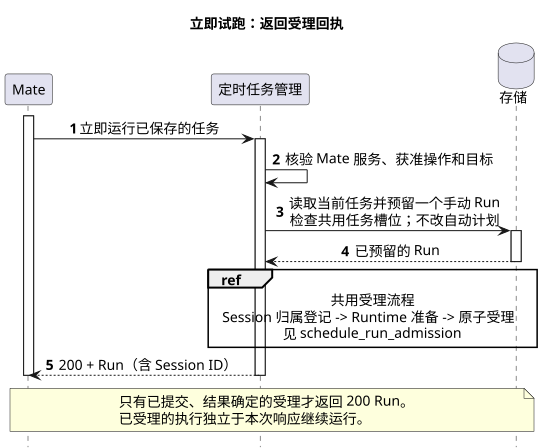
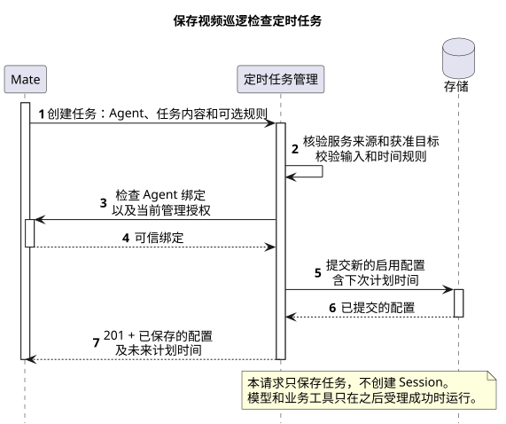

来源：01-总体架构/08-CampusClaw定时任务/configuration.md · 原文完整投影
Claw 定时任务配置与生命周期接口
模块主设计 · HTML 展示 · 源码证据 · 与 Claude 的取舍
| 属性 | 值 |
|---|---|
| 版本 | 0.28.0 · 2026-10-05 |
| 状态 | 当前目标契约，待实现、尚未发布；包含接口收口与授权的工程细化，不表示逐项字段均经单独确认 |
| 本文权威范围 | Claw 的创建、列表、详情、部分更新、时间预览、删除、立即运行、暂停及取消暂停，以及Run读取与删除关系；不定义 Mate 接口或页面实现 |
| 产品范围 | 每次运行创建独立 Session，使用已绑定 Agent；不提供已有 Session 目标 |
| 源码基线 | Claw main 553dcd5e2ff682f9684810a043b442b37a02e54a；2026-09-29 确认并 fetch，2026-09-30 重读该提交的调度范围；2026-10-04 重新 fetch 同提交并核验文件、Session 创建与凭据/模型链路、Cron、Session、ListEvents 读取、暂停状态及删除链路；2026-10-05 隔离 fetch 同提交并核验 trigger/enable/disable、状态竞争和 Runtime 受理；并重核Run日志、ListEvents数字分页及Session删除后读取；详见源码证据 §8.6～§8.15 |
| 对照 | Claude Managed Agents 公开 Beta HTTP API；2026-09-29 核对调度文档，2026-09-30 核对创建输入与 Cron 方言，2026-10-02 核对时间示例与精度边界；2026-10-04 重核名称、Cron 范围、执行目标、Files API、创建响应、metadata、Vault/凭据模型，以及 Deployment 详情/列表、资源类型、暂停原因、部分更新、删除/归档差异和 Run 读取边界；2026-10-05 重核 run/pause/unpause、Run模型、Run列表/详情和生命周期指南 |
1. 业务结果与接口边界
调用方配置“工作日 08:00 汇总园区设备告警”，向 Claw 提交 Agent、任务内容和时间规则。Claw 验证当前调用范围、绑定和规则，持久化后返回任务 ID、完整配置及计划时间摘要。之后可读取、修改该配置，不依赖调用方在线。
已确认的创建行为：schedule 可省略，省略时只保存、不立即执行；填写有效 schedule 后保存即登记自动计划，无需额外启用。试运行是独立的显式操作，可用于无 schedule 的配置；其 HTTP 契约见 §4.7，采用已记录受理结果的200 Run回执，八字段返回模型、同一任务不重叠及手动失败不改暂停状态已确认，错误映射见 §4.7，原子受理见执行设计。每次运行均新建独立 Session，将配置中的一条 user.message 作为首条任务消息；绑定的 Agent 定义继续复用；Cron 沿用 Spring 六字段。
时间规则仅支持 cron，采用 Spring 六字段。Cron 的 timezone 可省略，默认 Asia/Shanghai 并保存、回显；不接收 at、every、intervalSeconds 或 startAt。schedule 仍可整体省略或为 null，表示仅手动运行。绝对时刻响应统一为 UTC、以 Z 结尾且不含小数秒，与 Session 和完整事件共同采用秒级目标。响应的非空 schedule 包含只读 lastRunAt/upcomingRunsAt，status 使用小写，JSON 不提供 revision，并支持可选 metadata；顶层只读 type 固定为 schedule，pausedReason 返回当前暂停原因或 null，见 §4.1.1。Claw 通过 credentialIds 直接绑定一份或多份独立凭据，能力、引用层级与字段名已确认，详见 §4.2。名称上限为 256；时间类型范围与名称上限对齐 Claude，Cron 方言和时区默认值沿用 CampusClaw 已确认约束。
本页维护九个配置及生命周期操作和两个 Run 读取的当前目标契约，均待实现。新建状态为 active，创建处理器不调用模型或创建 Session。自动执行不补漏跑、遇忙跳过，失败或故障不重跑同一次执行；首版只支持文本及无需人工交互的任务，遇 ASK 由 Host 阻止待确认调用并结束本次根执行，不建立持久等待，见执行范围。删除 Schedule 及对应 Run，保留已受理 Session 且不请求取消；单独删除 Session 不改写 Run 的受理事实和 sessionId。是否由运行错误自动暂停整个 Schedule 是唯一尚待明确的生命周期选择，见 §4.1.1；企业身份、ID 格式与持久化接线仍需实施校准。
上述已确认创建语义不能被解释为“后端暂未接线也返回 active”。配置服务可以先开发和测试，但调度接线、执行身份及准入尚未交付时，不发布可自动运行的创建承诺；未满足依赖的请求返回服务不可用。保存成功也不保证后续业务一定成功，执行时仍须检查当前 Agent、授权和容量。
失败时，格式或规则无效不写入；更新在数据库事务内锁定最新记录并合并提交字段，失败不部分保存；数据库失败不返回成功。响应丢失时先读取核对当前结果，不据断网推断原事务未提交，也不承诺重复创建仍返回同一任务。Claw 不定义浏览器草稿、Mate 转发、公共 Chat 映射或 Agent 选择器。
2. Claw 接口清单
基础路径为 /campusclaw-service/v1。资源名沿用定时任务领域的 schedules；它保存完整任务配置，不是只有一个 Cron 字符串，也不宣称兼容 Claude Deployment 报文。
| 操作 | 方法与完整路径 | 成功结果 |
|---|---|---|
| 创建配置 | POST /campusclaw-service/v1/schedules |
201；完整资源及 Location |
| 列表 | GET /campusclaw-service/v1/schedules |
200；当前可信范围内的分页结果，每项为与详情同形的完整资源 |
| 详情 | GET /campusclaw-service/v1/schedules/{scheduleId} |
200；完整资源 |
| 部分更新 | POST /campusclaw-service/v1/schedules/{scheduleId} |
200；完整资源 |
| 时间预览 | POST /campusclaw-service/v1/schedules/preview |
200；规范规则、计算基准与最多五次未来计划时间；不保存 |
| 删除配置 | DELETE /campusclaw-service/v1/schedules/{scheduleId} |
200；ResultBean 包装完整 Schedule 删除回执；删除Schedule及Run、保留Session，不取消已受理执行，见 §4.6 |
| 立即运行 | POST /campusclaw-service/v1/schedules/{scheduleId}/run |
200；本次已记录的Run受理结果，sessionId/error二选一；不重叠且不等待业务完成，见 §4.7 |
| 暂停 | POST /campusclaw-service/v1/schedules/{scheduleId}/pause |
200；完整 Schedule，paused/manual，见 §4.8 |
| 取消暂停 | POST /campusclaw-service/v1/schedules/{scheduleId}/unpause |
200；完整 Schedule，active/null，见 §4.9 |
| 运行列表 | GET /campusclaw-service/v1/schedule-runs |
200；runs/nextPage；当前可见范围，可选scheduleId/hasError，不包含已删除任务的Run，见 §4.11 |
| 运行详情 | GET /campusclaw-service/v1/schedule-runs/{runId} |
200；同形完整Run；任务或Run已删除时404，见 §4.11 |
定时任务全部接口不采用 If-Match 或 Idempotency-Key，不返回配套 ETag；额外传入这两个 Header 时按普通未知 Header 忽略，不赋予并发或去重语义，也不专门因此报错。不把版本或请求键改放请求体、查询参数或其他自定义 Header；创建、读取、更新、预览、删除，以及后续试运行、暂停、恢复和 Run 读取均沿用这一接口约束。数据库内部配置代次、Run 身份和自动触发唯一约束继续保留。同一约束适用于已有 Session 等其他 Claw 接口；现有源码迁移差距见专项证据。各操作的具体规则集中在下文。
本切片不增加 options、Agent 目录或请求回执查询接口。调用方只提交业务输入；事务控制、当前状态校验和内部调度去重由服务端完成，网络结果不确定时的核对规则见 §5。
Claw 必须在服务认证边界取得可信调用者和管理作用域，再按资源及 Agent 授权。scope、owner、授权结果与原始凭据不进入请求 JSON；可选凭据引用单独校验，不能把引用当作已授权结论；不能信任任意 Header 中的声明。相关公司适配器和可信范围解析尚未接线，是明确的实施缺口；本设计不因“内部 API”而省略鉴权，Mate 负责可信接口定义和凭据，新增上下文查询及凭据解析的路径、字段草案见Mate 定时执行接口。到期业务执行身份与配置管理身份分别处理；Claw→Mate 服务间认证与下游业务凭据分开，不保存请求 Token 供将来运行。
普通 JSON 成功使用 resCode/resMsg/result，包括删除成功的完整 Schedule 回执及立即运行的Run记录；Run.error描述已记录的受理结果，不把它混同于HTTP请求失败；失败仅返回 resCode/resMsg，保留真实 HTTP 状态。JSON 为 lowerCamelCase。配置响应为 Cache-Control: no-store；语言支持 zh-CN/en-US，缺省或不支持时回退 zh-CN，JSON 响应返回 Content-Language。scheduleId 由服务端生成、大小写敏感且不复用；示例中的 UUID 后缀不构成客户端可构造 ID 的许可。
3. 配置字段与时间规则
| 字段 | 创建与更新约束 |
|---|---|
| name | 创建必填；去首尾空白后 1～256 个 Java 字符；允许重名，不作为身份 |
| description | 可选，最多 2048 个 Java 字符；创建省略默认 null，更新省略保持，空白或显式 null 清除；不附加到模型输入 |
| agentId | 创建必填；复用 ClawConstants.Agent.ID_REGEX，验证存在、可用和当前调用者的配置资格；只绑定 Agent 身份，不保证固定历史版本 |
| message | 创建必填；一条 type:"user.message"，content 非空且只接受有效 text 块；file 块返回400/SCHEDULE_MESSAGE_INVALID，见 §3.6；不开放 system.message 或 user.define_outcome |
| schedule | 可选；创建省略默认 null，更新省略保持；非空时只允许下表的 cron 对象，更新时整体替换 |
| metadata | 可选字符串键值对象；创建省略为 {}；沿用 Claude 最多 16 对、键最多 64、值最多 512 个字符；不传给模型、不作为授权依据，详见 §3.7 |
| credentialIds | 可选 string[]，直接绑定 Mate 受管凭据；创建省略为 []，响应同名回显；更新省略保持、数组整体替换、[] 清空，null 拒绝；最多16个、不重复，同目标歧义拒绝；ID 格式按企业标识校准，见 §4.2 |
| type | 资源顶层只读字段，固定为 schedule；创建、详情、列表元素、更新及删除回执均返回；区别于 schedule.type 和 message.type，见 §4.1.1 |
| pausedReason | 只读的当前暂停原因，始终返回 object 或 null；创建为 null，人工暂停为 manual，保留 error 形状但其触发策略待定，恢复后清空；精确边界见 §4.1.1 |
| status/id/createdAt/updatedAt | 全部只读；新建 active；时间为 UTC ISO 8601，秒级且无小数；status 为 active/paused；已确认直接删除，无 archived/deleted 公共状态；删除成功返回完整回执，随后读取404 |
| schedule.lastRunAt / schedule.upcomingRunsAt | 仅响应使用；最近自动运行实际开始时间及最多五个未来计划时刻，见 §3.3；创建、更新和预览请求传入时拒绝 |
| revision | 不属于公共请求或响应字段；内部配置代次只用于持久化和调度竞态检查，不透出 JSON |
以下为当前规则模型；创建、更新和预览共用同一校验及默认值。
| schedule.type | 完整输入 | 语义与边界 |
|---|---|---|
| cron | type、expression、timezone（可选） | type 固定为 cron；Spring 六字段 second minute hour day-of-month month day-of-week；timezone 使用 IANA 名称，省略默认 Asia/Shanghai，保存并回显有效值；拒绝五字段，不自动补秒 |
名称允许重名，不承载资源身份。256 的上限与 Claude 的 maxLength 对齐；不另设缺少业务依据的 128 限制。当前长度校验沿用 Java 字符计数；本次未验证两端对补充 Unicode 字符的计数是否完全一致。
3.1. Spring 六字段的含义
对外 Cron 契约采用六个以空格分隔的字段，不自动识别或转换五字段 POSIX，也不接收年字段。秒字段可指定计划触发秒，但不承诺任务在该秒准时开始；首版时间分辨率和部署限额见上线初始配置。
| 顺序 | 字段 | 范围与含义 |
|---|---|---|
| 1 | second | 秒，0～59 |
| 2 | minute | 分，0～59 |
| 3 | hour | 时，0～23 |
| 4 | day-of-month | 月内日期，1～31 |
| 5 | month | 月，1～12 或 JAN～DEC |
| 6 | day-of-week | 星期，0～7 或 SUN～SAT；0 与 7 都是周日 |
| 示例 expression | 在 Asia/Shanghai 下的含义 |
|---|---|
0 0 8 * * MON-FRI |
每周一至周五 08:00:00；不自动排除法定节假日 |
30 0 8 * * * |
每天 08:00:30 |
*/10 * * * * * |
每分钟第 0、10、20、30、40、50 秒；仅说明表达式含义，不代表产品已允许该频率 |
各字段支持 Spring 的列表、范围、步长及其日期扩展，具体匹配以项目使用的 Spring CronExpression 为准；本 API 只接受显式六字段，不开放宏快捷写法。月内日期与星期同时受限时要求同时匹配：0 0 8 1 * MON 表示“每月 1 日且为周一的 08:00”，不能按 POSIX 常见的日期或星期匹配方式解读。时区由显式 timezone 或 §3.4 的服务端默认值确定并保存，避免运行节点配置改变计划含义。官方语法
3.2. 仅 Cron 的范围与代价
非空 schedule 只接受 type:"cron"。创建、更新和预览使用同一限制；其他类型及 at、intervalSeconds、startAt 等额外字段均拒绝，不尝试转换成 Cron。仅手动运行继续用 schedule 省略或 null 表达，即时测试通过独立运行操作完成。
这一范围与 Claude Deployment 的仅 Cron 取舍一致，减少一次性任务耗尽、间隔起点和更新重置等契约。代价是本接口不支持未来指定时刻只执行一次，也不支持从任意起点连续按固定秒数重复。0 0 8 1 10 * 会每年匹配 10 月 1 日，不是指定某年的一次性任务；0 */7 * * * * 每小时重新匹配，不能冒充严格每隔 7 分钟。
旧 CronTool/CronSchedule 中 At/Every 的实现保留为既有源码事实；新配置 HTTP 不暴露这些类型。旧任务不自动迁移成 Cron，也不直接删除旧类型及其调用方；旧入口与数据迁移按模块合并处理，新旧调度器不得并行启用。收敛时间类型不改变 Spring 六字段、默认上海时区、每次新建 Session 或显式试运行的既有决定。
3.3. 计划时间与最近运行摘要
创建、详情、更新及列表元素中的非空 schedule 包含 type、expression、有效 timezone，以及只读 lastRunAt/upcomingRunsAt。两个只读字段已纳入响应范围；以下为具体运行语义，与运行接口一起验收。
| 响应字段 | 语义 |
|---|---|
| lastRunAt | 最近一次自动运行的实际开始时间，首次创建为 null；未启动的失败/跳过不更新，手动试跑不更新。不是计划时刻、结束时间或成功标志；自动运行开始后再失败仍保留该开始时间 |
| upcomingRunsAt | 响应计算时刻之后、按升序排列的最多五个 Cron 计划时刻；active/paused 均按规则计算，paused 的值仅表示恢复运行时对应规则的计划，不代表已经登记触发；删除成功回执的数组为空，随后不再通过读取接口返回已删资源 |
创建取一次服务端计算时刻完成规则校验，并以已保存配置组装 upcomingRunsAt、lastRunAt:null。详情/更新在各自一致读写快照中重新计算，数组按时间推进；不持久化用于客户端重试的原成功响应。所有时刻为 UTC 秒级 Z 格式。实际受理/启动可能晚于计划时刻，跳过和失败通过 Run 记录说明，不以数组保证执行。
lastRunAt 归属于整个任务，修改 Cron 或消息不清除历史；规则为 null 时整个 schedule 返回 null，不另造空规则对象。若之后重新配置 Cron，回显任务已有的最近自动开始时间。运行专题规定从关联根执行权威结果投影实际开始时间及摘要；字段存在不等于该链路已经实现。Claude 同字段说明同时提到实际开始与“Null until one completes”，本产品明确采用实际开始语义，不据文档推断其内部写入点。
独立预览用于保存前检查：输入 { "schedule": { ... } }，schedule 必须非空且只含可写规则；返回 result {schedule, computedAt, upcomingRunsAt}。其中 schedule 只回显规范规则，不带任务运行摘要；computedAt 是本次服务端取时，upcomingRunsAt 严格晚于它且最多五项。预览不关联已保存任务，因此没有 lastRunAt。无未来匹配的 Cron 返回 SCHEDULE_RULE_INVALID，不改动已保存资源。
预览与写入复用同一时间策略，保存重新校验，不把预览当作准入凭证。频率与配额由部署策略约束；超过范围返回稳定的策略错误，策略本身未配置则服务不可用。DST 与解析库版本边界必须验收，本接口不复制 Claude 的 jitter 承诺。动态摘要仅用于读取展示，不作为客户端更新前置条件。
3.4. 时区选择与校验
Cron 的 timezone 可省略，服务端默认使用 Asia/Shanghai；显式提供时允许其他合法 IANA 时区。保存前确定具体时区并随规则持久化，创建、详情和更新响应均回显有效值；计划计算使用已保存值，不取运行节点默认时区。创建和整体替换 Cron 规则使用同一默认处理；更新省略整个 schedule 则保留原规则及其时区。默认处理位于 Service；显式 null、空白和裸 UTC 偏移量返回 SCHEDULE_TIMEZONE_INVALID。显式名称须在部署 JDK 的 IANA 时区集合中；集合中可解析的名称按输入保存回显，不额外接受自定义缩写映射。
例如，调用方省略时区的 schedule 片段为：
{ "type": "cron", "expression": "0 0 8 * * MON-FRI" }
保存并回显的 schedule 片段为：
{ "type": "cron", "expression": "0 0 8 * * MON-FRI", "timezone": "Asia/Shanghai" }
定时任务绝对时刻响应统一为 UTC、以 Z 结尾且不含小数秒，适用于 createdAt/updatedAt 及预览、最近运行和未来计划时间字段。Session 与完整事件同步采用这一目标；秒级时间一致性维护写入规范化、存储与回显要求。Cron 的 timezone 仍回显已保存的 IANA 名称。当前创建/更新请求不接收绝对计划时间字段；只读时间摘要不作为请求输入。
服务端生成记录时间先转 UTC 并截断到秒再保存和响应，Cron 计算得到的计划时间按秒表示。秒级表示不承诺准时启动。既有实现证据保留当前毫秒实现与目标差距，不能把目标规则表述为现状。
2026-09-30 时区专项的历史证据区分 DSH Cron 必填时区、GitHub Actions 可选时区且默认 UTC、pi 无日历时区字段及 Codex 尚未核实的默认来源；不存在据此可推导的统一行业默认值。默认上海是 CampusClaw 已确认的产品约束，方便主要园区场景配置；代价是调用方省略字段时采用了产品预设，必须通过保存和回显使该选择可见。
3.5. 每次运行创建独立 Session
每次自动触发或显式手动运行均使用配置绑定的 agentId，新建一个独立 Session 并提交配置消息。Agent 是可复用定义，Session 是一次会话容器；运行时可据该定义创建执行对象，但不创建新的 Agent 定义资源或返回新的 agentId。一次运行使用一个新 Session，不自动继承上次运行的聊天历史；Agent 配置、受管资源及外部业务数据不因此自动隔离或清空。
创建、更新请求均不提供 target 或 sessionId，响应也不回显恒定目标；这些字段按未知字段拒绝。Schedule 配置没有待绑定的 Session，创建保存不启动 Session；真正运行后的 sessionId/rootExecutionId 归 Run 关联。不同创建请求可以产生不同配置资源；它们与后台同一 Run 的重复受理不是同一问题。后台已分配 Run 必须复用原受理关联，不因内部重复投递而再建会话。
例如“工作日 08:00 汇总园区设备告警”，周一、周二分别产生不同 Session；需要昨日结论时通过已授权的业务数据或资源获取。本能力不提供在指定旧聊天中持续追加输入。每个 Run 仍须固定本次消息和根执行，后续人工继续该结果会话不会改写原 Run 的结论。
该选择对齐 Claude Deployment 的新 Session 行为，减少原会话授权、模式、忙闲状态及多任务竞争的契约；代价是不能自动延续原会话上下文。其他基线保留各自的历史证据，不作为本产品必须提供目标选择的理由。Agent 版本固定是另一项能力，不能从“新 Session”推导 Claw 已具备 Claude 的版本 pin。
3.6. 文件引用与上传边界
当前 Claw 已实现的普通 Session 消息块是 {"type":"file","fileId":"0123456789abcdef0123456789abcdef"}：ID 为 32 位十六进制，最多四个、不重复；文本块如有必须位于第一项。它能保存引用并在完整事件中回显，不接收 multipart 文件字节。
2026-10-04 在 Java main 553dcd5e2ff682f9684810a043b442b37a02e54a 的 modules、campusclaw、frontend 及 Runtime/ControlPlane Controller 范围未发现 Claw 上传路由；前端附件按钮明确禁用。RuntimeEntryCodec 仅把 fileId 转成 [File IDs] 文本交给模型，未下载、解析或验证文件可读性；Read 工具按工作区 path 读取文件，不能自动充当 fileId 解析器。精确路径见文件证据。
既有 M09 附件设计把上传、扫描与文件存储归于 mate-service，把 Claw 定位为引用及内容消费者；该设计标记待实现，不能当作当前上传实现。其附件不可变绑定单个 Session、内部 resolve 拒绝跨 Session，且文件 ID 格式仍为 file_<26 alnum>，与当前 Runtime 的 32 位十六进制引用未对齐。
首版定时任务不支持附件：创建和更新的 message.content 只接受 text，file 块一律返回400/SCHEDULE_MESSAGE_INVALID，不静默丢弃或保存无法读取的引用。旧 CronPayload 只有纯文本，普通 Session 的现有文件引用事实保持不变。未来若支持重复使用巡检附件，须先在 M09 明确跨 Session 授权、ID、保留及执行时读取规则；不在首版实现。外部 Mate/附件服务实现本次未核验。Claude Files API 和 Deployment resources 文件挂载是对照能力，不代表 Claw 已有接口。
3.7. metadata 的用途与范围
metadata 是可选的业务关联信息，例如 { "parkCode": "park-east", "purpose": "alarm-summary" }。支持该字段，沿用 Claude 的字符串 map 与 16/64/512 限制，长度沿用本项目 Java 字符计数，不声称补充 Unicode 字符与 Claude 的计数完全一致。键必须非空，值允许空字符串；创建及保存值拒绝 null、数值、布尔值、数组和嵌套对象，不自动转换成字符串。
创建省略返回 {}。更新沿用 Claude 的逐 key patch：字符串新增或覆盖，key 的值为 null 时删除该 key，省略 key 保留；{} 不做修改，需清空时逐 key 删除。合并后的存储对象仍满足 16/64/512 限制且不含 null；顶层 metadata:null 拒绝。metadata 不进入 user.message、系统提示或工具参数，也不自动继承为 Session 元数据；不得用其中的 tenantId、owner 或凭据引用代替可信授权。不得保存 Token、密码或其他 secret，敏感凭据应采用独立保管与授权引用。首版不承诺按 metadata 过滤或索引。
4. 创建、读取、更新与删除报文
以下创建主体包含 credentialIds 字段；默认值和引用校验见 §4.2。创建 POST /campusclaw-service/v1/schedules：
{
"name": "工作日园区告警汇总",
"agentId": "agent-550e8400e29b41d4a716446655440000",
"message": {
"type": "user.message",
"content": [
{
"type": "text",
"text": "汇总园区过去24小时的设备告警，并标出需要跟进的工单。"
}
]
},
"schedule": {
"type": "cron",
"expression": "0 0 8 * * MON-FRI",
"timezone": "Asia/Shanghai"
},
"metadata": {
"parkCode": "park-east",
"purpose": "alarm-summary"
},
"credentialIds": [
"credential-alarm-example",
"credential-workorder-example"
]
}
响应 HTTP 201，Location: /campusclaw-service/v1/schedules/schedule-927e03d2a4784f90a6238e790539c6e4：
{
"resCode": "0",
"resMsg": "success",
"result": {
"type": "schedule",
"id": "schedule-927e03d2a4784f90a6238e790539c6e4",
"name": "工作日园区告警汇总",
"description": null,
"agentId": "agent-550e8400e29b41d4a716446655440000",
"message": {
"type": "user.message",
"content": [
{
"type": "text",
"text": "汇总园区过去24小时的设备告警，并标出需要跟进的工单。"
}
]
},
"schedule": {
"type": "cron",
"expression": "0 0 8 * * MON-FRI",
"timezone": "Asia/Shanghai",
"lastRunAt": null,
"upcomingRunsAt": [
"2026-10-05T00:00:00Z",
"2026-10-06T00:00:00Z",
"2026-10-07T00:00:00Z",
"2026-10-08T00:00:00Z",
"2026-10-09T00:00:00Z"
]
},
"status": "active",
"pausedReason": null,
"createdAt": "2026-10-04T02:00:00Z",
"updatedAt": "2026-10-04T02:00:00Z",
"metadata": {
"parkCode": "park-east",
"purpose": "alarm-summary"
},
"credentialIds": [
"credential-alarm-example",
"credential-workorder-example"
]
}
}
GET 详情返回同形完整资源；列表每项同样返回完整资源，此点已确认。分页与筛选见读取详情与读取列表。全部读取接口待实现。
部分更新的完整请求、响应、字段处理和失败规则集中在更新接口。创建、详情、列表元素和更新响应共用完整资源模型，不把只读字段加入更新请求。
4.1. 创建成功响应（待实现）
创建 POST /campusclaw-service/v1/schedules 解决的是保存可运行配置。上述 JSON 是完整响应模型，包含资源 type、pausedReason、只读时间字段、小写 active、metadata 和 credentialIds，不提供 revision；HTTP201及Location沿用现有Session创建风格。
| 项目 | 创建时的值及含义 | 与 Claude 的对应或差异 |
|---|---|---|
| HTTP / Location | 201 Created；Location 指向新配置详情 | Claude 创建参考页为 200；Claw 沿用现有 Session 创建风格 |
| resCode/resMsg/result | 成功有三字段；resCode 为字符串 0，result 为完整资源 | 公司 ResultBean；Claude 直接返回资源 |
| id | 定时任务配置 ID | 对应 Deployment id，不是 agentId/sessionId/runId |
| type | 固定为 schedule，标识返回的是任务配置资源 | 对应 Claude 的 type:deployment；采用 Claw 自身资源名称 |
| name/description | 规范化名称；未提供 description 返回 null | 对应同名字段；description 不参与模型输入 |
| agentId | 绑定的 Agent ID | Claude 返回 id/version/type 对象；Claw 无历史版本绑定，不伪造 agentVersion |
| message | 保存的一条 user.message | Claude initial_events 为数组；Claw 仅一条用户消息 |
| schedule | 规则及 lastRunAt/upcomingRunsAt；未配置则 null | 对应 Claude schedule；Claw 六字段且默认上海时区 |
| schedule.lastRunAt | 创建为 null；表示最近自动运行的实际开始 | 对应 last_run_at；手动试跑不更新，不当作业务成功 |
| schedule.upcomingRunsAt | 最多五个未来计划时刻 | 对应 upcoming_runs_at；计划值不保证实际启动 |
| status | 创建 active；存续资源 active 且 schedule 非空才有自动计划；删除回执保留最后状态，见 §4.6 | 与 Claude active 拼写一致；Claw 直接删除，不采用归档资源模型 |
| pausedReason | 创建为 null；表示当前暂停原因，不是最近运行错误 | 对应 paused_reason，采用 lowerCamelCase；manual/error 与恢复清空语义对齐 |
| metadata | 原样保存的字符串对象；省略默认 {} | 对应同名字段；沿用 16/64/512 限制，不传模型 |
| credentialIds | 引用独立凭据的 ID 数组，响应不含秘密；省略时回显 [] | Claude vault_ids 引用集合；Claw 直接选择独立凭据，不新增 Vault 分组层 |
| createdAt/updatedAt | 新建相等；UTC 秒级无小数 | 对应 created_at/updated_at；Claw 精度是产品规则 |
revision 不进入创建、详情、列表或更新响应。它是内部实现可用的配置代次，与用户任务内容、Agent 版本、执行次数均无关，不需要调用方感知。创建也不返回 sessionId、runId、executionId、模型答案或业务完成状态。
省略 schedule 的创建响应仍含 type:"schedule"、schedule:null、status:"active"、pausedReason:null：可以手动运行，但没有自动计划，不隐含立即试跑。提供有效 schedule 后无需再显式启用；状态与时间摘要是服务端保存的响应快照，不是客户端收包时的实况。需要当前计划、状态和运行时间时 GET；重复创建作为新的请求处理。
小写和直接删除已确认；存续资源使用 active/paused，不提供 archived/deleted 状态、archivedAt、deletedAt 或 includeArchived。Claude 则以 archived_at 表达归档，归档后的 status 仍可为 active。此处是明确的产品与生命周期差异，删除成功返回完整 Schedule 作为一次回执，随后不再提供读取；暂停/恢复规则见 §4.8～§4.10。environment_id/resources/budget 仍不引入；凭据引用见 §4.2，不能把 metadata 当成凭据或权限入口。
4.1.1. 资源类型与当前暂停原因
园区运营人员发现告警汇总没有继续执行，需要知道当前是否暂停以及暂停原因。pausedReason 随完整资源返回当前原因，历史运行错误继续由 Run 记录。顶层 type 则使调用方脱离请求路径仍能辨认这是 Schedule 配置。两字段已确认，待实现。
type 始终为字符串 schedule，创建、详情、列表元素和更新使用同一规则；无 Cron 计划时也不改变。它与 schedule.type 的 cron、message.type 的 user.message 分属不同层，不增加时间规则或消息类型。
| 当前状态或动作 | pausedReason 的响应语义 |
|---|---|
| 新建或处于 active | null；字段不能省略 |
| 人工暂停 | 非空对象，type 为 manual |
| error 形状预留 | {type:"error",error:{type,message}}，内层采用 §4.7 的安全错误形状；是否据运行错误自动进入此状态仍待决定，不能仅因一次失败填入该原因 |
| 恢复为 active | 清空为 null；不删除历史 Run 或暂停审计 |
| 修改已暂停配置 | 保持当前原因；修复配置后仍需显式恢复 |
人工暂停后的资源片段如下，其余字段继续按完整资源返回：
{
"type": "schedule",
"status": "paused",
"pausedReason": { "type": "manual" }
}
在 active/paused 范围内，pausedReason 非空当且仅当 status 为 paused；不能返回 active 与 manual/error 原因的组合。任务删除成功的完整回执保留最后 status/pausedReason，随后不再提供读取；不产生额外的删除原因响应对象。是否自动暂停整个 Schedule 及其触发条件仍待确定；当前不能默认继承旧 Cron 连续三次失败禁用，也不能把每次失败、限流、ASK 或业务失败都等价为暂停。无论该选择如何，本次结果均如实记录且不自动重跑。Claw 无对应 Environment/Vault 资源，不照搬其错误枚举。
两个字段由服务端生成；创建和配置更新若传入顶层 type 或 pausedReason，即使值看似正确，也按只读字段返回 400 SCHEDULE_REQUEST_INVALID。合法的 message.type 和 schedule.type 仍是原有输入。暂停/恢复操作负责生成原因，调用方不能通过配置更新伪造或清空它。
status 与 pausedReason 在同一持久化边界原子修改，并按生命周期变更更新 updatedAt 和内部配置代次；读取只能观察一致组合。原因属于 Schedule 当前状态，不能由 GET 临时推断最近一个 Run 的错误。错误投影不暴露原始异常、堆栈、凭据或敏感业务参数。读取返回当前状态与原因的一致快照，历史变化通过审计/Run 观察，不提供原 HTTP 写请求回执重放。
Claude 的资源 type 固定为 deployment，Claw 改为 schedule 以匹配自身领域；paused_reason 对应 pausedReason，保留 manual/error 和恢复清空的语义。依据为 2026-10-04 重读的Deployment 模型与调度指南。创建参考页的 active 配 manual 示例与模型约束冲突，不作为本设计依据。公开证据及现有 Session VO/Cron 状态差距见专项核验。
4.2. credentialIds 直接绑定凭据
业务问题是“每天 08:00 自动读取园区告警时，凭什么身份调用业务服务”。创建任务的登录凭据可能早已过期；管理任务的权限也不自动等于调用告警、门禁或工单接口的权限。模型服务认证是第三个独立边界。
Claude 的 Deployment 可选 vault_ids 引用已有 Vault（最多 50）；Vault 的 Credential 由独立接口创建和更新。敏感 token/secret 只写不回读。MCP 凭据按 mcp_server_url 匹配注入；环境变量凭据在 sandbox 中表现为不透明占位符，在受控出站边界替换。Vault 是 workspace 范围，不自动提供企业用户/园区级业务授权。公开事实、轮转和自托管限制见凭据证据。
Claw 使用 credentialIds 直接引用一份或多份独立受管凭据；能力、资源层级及字段名已确认，功能待实现。每个 ID 指向完整的逻辑凭据或连接身份，例如园区告警服务访问身份，内部可以包含多个认证值，不是一项对应一个 Header。Mate 是接口定义、授权及凭据的权威；任务只保存引用与经 Mate 确认的非秘密授权依据，真实秘密只在实际工具执行前解析。具体路径及字段为Mate 接口草案，待实现并需企业接线校准。
| 产品 | 资源关系 | 收益与代价 |
|---|---|---|
| Claude | Deployment → vault_ids → Vault → Credential | 凭据集合便于成组授权及复用，同时需要集合和成员变更规则 |
| CampusClaw | Schedule → credentialIds → Credential | 任务明确选择可用凭据，首版不增加 Vault 集合层；多个任务共用一组凭据时需分别维护引用列表 |
创建请求和 result 响应采用同名字段。以下为字段片段；本文 credential-* 示例仅说明引用，不定义最终 ID 格式：
{ "credentialIds": ["credential-alarm-example", "credential-workorder-example"] }
字段可选、创建省略归一化为 []；响应只回显引用 ID，不回显 secret。[] 表示没有显式绑定业务凭据，不表示借用创建请求的 Token。更新省略保持、[] 清空、非空数组整体替换，显式 null 拒绝。创建和每次执行均需校验当前引用资格；保存成功不等于下游业务已经认证成功。原 ID 下的凭据轮转不要求任务重新保存 secret，具体解析/撤销时效由凭据权威契约确定。
不开放 vaultIds、credentialRefs 或原始 credentials 对象作为别名；这些值按未知字段拒绝。最多16个引用，重复ID拒绝；多个凭据对同一可信目标形成歧义时拒绝，不能采用最后一个覆盖。ID正则须与Mate企业标识校准，credential-*仅为示例。可信身份与授权由Mate查询结果确定，不通过metadata或请求Header自行拼接。普通 Session 是否同时增加同名字段，另按其接口范围确定。
现有一次执行只有一份 MateCredentials 快照，不能把多 ID 列表直接转换为 Header 合并或最后一个覆盖。多凭据引用按Mate返回的可信业务目标绑定匹配，同目标歧义拒绝；这是待实现增量，不由数组字段自动提供。配置修改影响后续运行准备；已受理运行继续固定原配置引用快照，凭据本身的轮转/撤销与配置引用列表更新分别处理。
正常流程为：在 Mate 完成凭据授权 → 保存时通过上下文查询仅验证 Agent 与 credentialIds 引用资格，不领取 secret → 到期准备时重新查询可信接口、授权依据与引用绑定 → 受理一个新 Session → 工具完成可信目标解析、参数校验及权限判断，允许执行后才由 ScheduleCredentialPort 调 Mate resolve 获取必要 secret 并注入业务请求 → 回传安全结果。ASK 时由 Host 结束本次根执行，不 resolve 凭据或发出待确认业务请求。secret 不进入模型、metadata、配置、Run、Session记录或公共响应，仅存于最短执行内存范围。
凭据失效或撤销时记录本次真实结果且不重跑；是否自动暂停整个任务只按 §4.1.1 的待定策略处理，不能静默借用创建者浏览器 Token、管理员身份或另一组凭据。后续轮转通过同一引用生效的范围、刷新失败和运行中撤销时效，需要凭据权威系统明示，不承诺实时传播。
Claw 已观察行为是：普通消息只捕获本次执行 Header 的不可变 MateCredentials 并在工具执行时转发，Cron 明确使用 empty()，不会恢复旧请求凭据。模型当前使用内部 CampusMateProvider，不能把模型 API Key 与业务凭据合并成一个请求字段。普通交互 Session 的 Header 快照规则保持；定时入口改用 Mate 上下文授权查询和执行时 resolve。服务间认证按企业机制接线，与解析出的下游业务凭据分别处理，不能把两类认证混为一个 Header 快照。
该选择属于企业产品约束与安全加固。首版受控业务工具不必复制 Claude 的整个 sandbox 环境变量出站替换机制；收益是复用现有可信 Adapter，代价是还不能向任意命令提供等价的安全凭据能力。凭据存储和签发/刷新由Mate权威负责，Claw复用共享客户端，不新增Maven依赖或宣称已具备Vault；企业认证SDK及完整传递依赖仍需实施核验。
4.3. 读取任务详情（待实现）
运营人员打开“工作日园区告警汇总”，需要看到保存的任务内容、Agent、凭据引用、时间规则和当前计划摘要。详情读取返回这一份配置；某次运行的结果另从 Run 和关联 Session 读取，不在配置中嵌入完整执行历史。
GET /campusclaw-service/v1/schedules/schedule-927e03d2a4784f90a6238e790539c6e4
Accept-Language: zh-CN
| 请求项 | 目标契约 |
|---|---|
| path.scheduleId | 必填，使用创建返回的原 ID；不通过名称查找，不自行构造 |
| query / body | 无业务查询参数，无请求体 |
| 认证与授权 | 复用 §2 的可信调用上下文，先认证和检查读取功能资格，再按当前可见范围查找任务；具体公司认证 Header/适配器待接线，不用 credentialIds 充当调用本接口的认证 |
| Accept-Language | 可选；支持及回退规则见 §2 |
| 重试 | 读取可安全重试，不触发任务 |
成功为 HTTP 200，返回 Content-Type: application/json、Cache-Control: no-store及 Content-Language。result 与 §4 创建成功的完整资源同形，固定包含 type、id、name、description、agentId、message、schedule、status、pausedReason、metadata、credentialIds、createdAt、updatedAt；无计划时 schedule 为 null，空元数据/凭据分别为 {} 和 []。不返回凭据秘密、文件内容、Agent 完整定义、内部调度游标、revision 或尚未关联的 Session/Run ID。
读取返回当前持久化配置及按 §3.3 生成的时间摘要。一次读取使用一致的配置/lastRunAt 快照，并取一次权威计算时刻生成 upcomingRunsAt；配置或生命周期最近修改时间 updatedAt 不因 GET 或时间数组滚动而变化。读取不改变更新准入条件；计划数组自然推进，不产生客户端版本过期错误。当前不提供 304 缓存协商流程。
正常调用只进行身份与范围校验、持久化读取、时间计算和安全投影。Agent 停用、已绑定凭据失效或无人值守执行依赖不可用，不妨碍有读取权限的用户查看已保存任务并修复；不在 GET 中重新 prepare、换取业务凭据、刷新 token、读取 secret、验证下游登录或创建 Session。读取资格本身被撤销仍应拒绝。凭据引用按保存值返回，不因引用暂时不可用而静默删掉或替换它，也不附加未经验证的 credentialStatus。
删除提交后开始的详情读取返回404，不提供读取已删除配置或恢复它的入口。已在删除前取得快照的并发 GET 可能先后抵达客户端，读取响应不构成任务仍可运行的保证；所有新受理在数据库内重新检查资源存在性。该任务的 Run 同时删除，保留的历史对话由 Session 独立读取，不能借旧关联重新开放配置或Run详情。
失败采用 §6 的两字段错误体：非法 ID 为 400 SCHEDULE_REQUEST_INVALID；未认证为 401；无读取功能资格为 403 SCHEDULE_READ_FORBIDDEN；任务不存在、已删除或不在当前可见范围均为 404 SCHEDULE_NOT_FOUND。权限权威或持久化暂不可用为 503；已存记录损坏或响应投影失败为 500 SCHEDULE_READ_FAILED，不能把读取故障转成 404。普通 GET 不因 Agent 执行资格失效而返回 409。成功和错误均按本专题目标禁用缓存。
{
"resCode": "SCHEDULE_NOT_FOUND",
"resMsg": "定时任务不存在或不可访问。"
}
en-US 的同一错误为 {"resCode":"SCHEDULE_NOT_FOUND","resMsg":"Schedule not found or not accessible."}，HTTP 状态仍为 404。读取权限错误是功能级拒绝；资源级不可见使用上述统一 404，避免泄露另一范围内的任务是否存在。
Claude 对应 GET /v1/deployments/{deployment_id}，同样返回完整配置，但直接返回 Deployment，包含其 Agent 版本、环境、初始事件、Vault 引用等资源。Claw 保持既定 Schedule 字段和公司包装。官方详情与读取源码证据分别说明公开契约和当前实现缺口。
4.4. 读取任务列表（待实现）
列表用于按名称、Agent 和状态找到任务，并直接取得任务配置。已确认每个列表元素与详情 result 采用相同的完整资源，包含 message、description、metadata 和 credentialIds，不维护单独的摘要字段集合；这与 Claude 的完整 Deployment 元素取舍一致。只返回调用方有权读取的任务，凭据只返回引用。分页按现有 ListEvents 权威契约及数字分页规则收敛为普通整数 page/limit 和 nextPage；下文定义具体映射与筛选目标，待实现。
GET /campusclaw-service/v1/schedules?page=1&limit=1&status=active
Accept-Language: zh-CN
| query | 规则 |
|---|---|
| page | 可选正整数，默认 1；1、2、3……是普通页码，不是游标或 Schedule ID；禁止 0、负数、非整数及超出支持范围的数值 |
| limit | 沿用 ListEvents：可选正整数，默认 50，范围 1～200；表示本页最多任务数，越界拒绝，不静默截断；Service 应用默认值 |
| name | 可选；去首尾空白后 1～256 个 Java 字符，按名称包含匹配；空值拒绝，省略不筛选。按字面量匹配，用户输入的 %/_ 不作为 SQL 通配符；按大小写敏感的字面量匹配，实现时固定对应数据库比较规则 |
| agentId | 可选；格式复用 Agent ID 规则，按绑定 ID 精确匹配；合法但无可见任务时返回空页，不借查询探测 Agent 存在性 |
| status | 可选单值精确匹配，小写；只允许 active/paused，省略时均可返回；不接受 archived/deleted |
无请求体；认证、读取功能资格和语言与详情一致，不要求写入控制 Header。筛选条件以 AND 组合，不提供客户端 owner/scope、任意排序、metadata 查询或凭据反查。重复标量、未知查询项及非法格式以 400 SCHEDULE_REQUEST_INVALID 拒绝。查询始终排除已删除记录；删除过滤与可信范围过滤均先于分页。没有 includeArchived/includeDeleted 查询入口。
成功 HTTP 200，普通响应 Header 与详情一致。以下例子请求 page=1、limit=1，当前查询还有后续记录，因此 nextPage=2：
{
"resCode": "0",
"resMsg": "success",
"result": {
"schedules": [
{
"type": "schedule",
"id": "schedule-927e03d2a4784f90a6238e790539c6e4",
"name": "工作日园区告警汇总",
"description": null,
"agentId": "agent-550e8400e29b41d4a716446655440000",
"message": {
"type": "user.message",
"content": [
{"type": "text", "text": "汇总园区过去24小时的设备告警，并标出需要跟进的工单。"}
]
},
"schedule": {
"type": "cron",
"expression": "0 0 8 * * MON-FRI",
"timezone": "Asia/Shanghai",
"lastRunAt": null,
"upcomingRunsAt": [
"2026-10-05T00:00:00Z",
"2026-10-06T00:00:00Z",
"2026-10-07T00:00:00Z",
"2026-10-08T00:00:00Z",
"2026-10-09T00:00:00Z"
]
},
"status": "active",
"pausedReason": null,
"metadata": {"parkCode": "park-east", "purpose": "alarm-summary"},
"credentialIds": ["credential-alarm-example", "credential-workorder-example"],
"createdAt": "2026-10-04T02:00:00Z",
"updatedAt": "2026-10-04T02:00:00Z"
}
],
"nextPage": 2
}
}
列表每项直接采用详情资源，不增加 agentName、nextRunAt、lastRunStatus 或执行结果。完整元素便于直接消费同一响应模型，也避免调用方为读取每条消息另发详情请求；代价是列表传输全部任务内容，需要限制页大小。result 仅包含 schedules/nextPage，不返回 total、page、limit 或额外 hasMore。读取完整元素不提供凭据秘密或文件字节；列表中的配置是当次读取快照；编辑可重新读取详情确认内容，写入由数据库当前状态决定。
权限范围与业务过滤必须先于分页；禁止先取全局页再过滤。计算 offset=(page-1)*limit，查询前检查整数和乘法边界，溢出或不支持的数值返回 400。读取最多 limit+1 个匹配任务，额外一条仅用于判断下一页；响应最多 limit 条，有后续记录时 nextPage=page+1，否则为 null，不为此接口执行 total 的 COUNT 查询。整页配置及下一页判断来自单次一致读取边界，时间摘要共用本次计算时刻，不跨 HTTP 请求持有事务或快照。
排序为 updatedAt DESC、id ASC，而 ListEvents 按已提交事件顺序从旧到新读取；只复用分页协议，不照搬事件顺序。运行摘要变化不更新 updatedAt，因此不会仅因一次自动启动改变任务排序。但任务配置可被编辑、删除，新任务会进入列表前部，不能借用事件只在尾部追加的稳定位置前提；并发翻页仍可能重复或遗漏，按 id 去重不能补回漏项。同一轮保持 limit 与筛选不变；修改它们或已知列表发生变更时从 page=1 重读，不将此接口作为可靠增量同步协议。
无匹配或合法超末页均返回 HTTP 200、schedules:[]、nextPage:null，不返回 404、204 或 null 数组；nextPage:null 仅说明本次查询无下一页，不表示不会再有任务或任务已执行完成。无读取功能资格返回 403，认证失败为 401；权限/存储暂不可用为 503，记录损坏或投影失败为 500，不伪装成空列表。具体错误格式、语言与详情一致。
| 对比项 | Claude Deployment 列表 | Claw 当前目标及取舍 |
|---|---|---|
| 元素 | 完整 Deployment，包含 initial_events、metadata、vault_ids | 已确认完整 Schedule，与详情同形；复用响应模型，代价是传输每条任务内容 |
| 分页 | limit 默认 20、最多 100；page 为不透明游标，响应 data/next_page，末页 next_page:null | 参考 ListEvents 的整数 page/nextPage，limit 默认50、最多200；result 为 schedules/nextPage，无 total。保持 Claw 客户端风格，代价是深页 OFFSET 和并发翻页移动 |
| 过滤 | agent_id、创建时间 gte/lte、status、include_archived；status 与 include_archived 不能组合 | 增加名称搜索，保留 agentId/status；暂不提供创建时间区间；已删除任务始终排除，不提供 includeArchived |
| 顺序 | 本次公开页未声明默认排序、稳定快照或游标失效规则 | 显式 updatedAt DESC、id ASC，便于最近修改的任务靠前；仍有并发翻页限制 |
| 身份 | Anthropic API 身份/workspace 边界 | 公司可信调用范围；Agent ID 与 metadata 不代替租户/园区授权 |
官方证据为 2026-10-04 重读的列表参考页。Claude page 必须原样传回，不能把它当成数字页码；Claw 的 page 则明确是可按规则构造的正整数，nextPage 为整数或 null，两者同名但类型和语义不同。不依据 Claude 未声明内容推断其内部 SQL、索引或分页快照。
配置读取与运行读取分开：Claude 另有 GET /v1/deployment_runs 和 GET /v1/deployment_runs/{deployment_run_id}，记录 Session 创建结果；Agent 后续业务结果需要 Session 观察。Claw 的独立 Run 读取、过滤、错误及删除历史边界见 §4.11；任务详情页面可以组合配置详情与 Run 列表，但配置 GET 不因此内嵌运行历史。
4.5. 更新任务配置（待实现）
运营人员把“工作日园区告警汇总”从 08:00 改为 09:00，并调整描述与业务标签；任务 ID、历史 Run 和结果 Session 保持原有归属。调用方先读取详情，提交需要修改的字段，服务端验证合并后的配置并原子保存，返回完整资源。任何校验或并发冲突都不留下部分修改；修改不触发试运行。
本操作复用已确定的创建字段范围、完整响应、只读 type/pausedReason 和暂停语义。下表定义七个字段的清空与替换语义；不使用客户端版本或请求键，由数据库权威保证原子修改。
| 请求项 | 目标契约 |
|---|---|
| 方法与路径 | POST /campusclaw-service/v1/schedules/{scheduleId}；部分更新既有配置，不创建新任务 |
| path.scheduleId | 创建返回的原 ID，大小写敏感；不通过 name 定位，不允许请求体修改身份 |
| query | 无业务查询参数 |
| 身份与授权 | 沿用 §2 的可信调用上下文与管理资格，在当前可管理范围内读取任务；重新验证合并配置的 Agent/凭据引用资格，不信任客户端 scope/owner |
| Content-Type | 必须为 application/json；请求体为非空对象 |
| Accept-Language | 可选；zh-CN/en-US，缺省或不支持时回退 zh-CN，响应回显实际 Content-Language |
认证适配器与具体公司认证 Header 仍由 §2 的权威边界确定，credentialIds 不充当本接口登录凭据。资源不存在或不在可管理范围内统一 404；不能先回显其状态、Agent 或凭据引用再拒绝授权。
可写字段仅有以下七个，全部可省略，但请求至少包含一个。 省略一律保持已有值，创建时的默认值不能覆盖省略的顶层字段。
| 字段 | 提供非 null 值时 | 显式 null 与空值 |
|---|---|---|
| name | 使用新名称，去首尾空白后 1～256 个 Java 字符；允许重名 | null、空字符串或空白拒绝 |
| description | 替换描述，最长 2048；不进入模型任务 | null、空字符串或空白均清除，保存并返回 null |
| agentId | 替换后续运行绑定，校验新 Agent 的存在、可用及配置资格；不修改历史 Run/Session | null 或空值拒绝；重复提交同一 ID 不提供版本 re-pin 或目录强制刷新 |
| message | 整体替换一条 user.message，提交完整 type/content 并沿用创建校验；替换后不保留旧 content 中未提交的文本；file块按首版范围拒绝 | null、空对象及无有效内容的消息拒绝；不追加到已有 Session |
| schedule | 整体替换 cron 规则，必含 type/expression；timezone 省略默认保存 Asia/Shanghai，不继承旧规则的时区 | null 清除自动计划；{} 或仅 timezone 的对象拒绝；显式 timezone:null、空时区或无效IANA名称按 §3.4 拒绝 |
| metadata | 逐 key patch：字符串新增/覆盖，key:null 删除该 key，未列出的 key 保留；合并后再校验大小与类型 | 顶层 null 拒绝；{} 为无修改；删除全部键后响应 {}，不返回含 null 值的 map |
| credentialIds | 数组整体替换授权引用，使用 [] 清空；省略不变，不能合并原始 Header 或 secret | null 拒绝；最多16个、不重复且拒绝同目标歧义；ID 格式按 §4.2 的企业标识校准 |
重复 JSON 字段拒绝，不采用后一个值覆盖前一个值。顶层 {} 拒绝。{"metadata":{}} 或字段值与保存值相同的请求可成功，但归一化后的配置未变时不改 updatedAt 或内部配置代次。metadata 删除不存在的 key 也是无修改。当前授权及资源状态仍须检查，响应时间摘要按本次一致快照计算。
以下均为只读或不属于配置输入：顶层 type、id、status、pausedReason、createdAt、updatedAt、revision，以及嵌套 schedule.lastRunAt/upcomingRunsAt；传入即拒绝，不静默忽略。target/sessionId、vaultIds/credentialRefs 也不开放。message.type 与 schedule.type 仍是合法的嵌套输入。调用方不能把详情响应整个回传作为更新请求。
下例只修改三个字段，其余保持。metadata 中 parkCode 未提交，继续保留：
POST /campusclaw-service/v1/schedules/schedule-927e03d2a4784f90a6238e790539c6e4
Content-Type: application/json
Accept-Language: zh-CN
{
"description": "汇总前一日告警并跟进未关闭工单",
"schedule": {
"type": "cron",
"expression": "0 0 9 * * MON-FRI",
"timezone": "Asia/Shanghai"
},
"metadata": {
"purpose": "alarm-follow-up"
}
}
成功为 HTTP 200，返回 application/json、Cache-Control:no-store 和 Content-Language；不返回 201/202/204，也不返回仅含被修改字段的对象。result 与创建、详情和列表元素使用相同字段集合与类型。示例按 2026-10-04T02:30:00Z 计算，任务尚未自动运行：
{
"resCode": "0",
"resMsg": "success",
"result": {
"type": "schedule",
"id": "schedule-927e03d2a4784f90a6238e790539c6e4",
"name": "工作日园区告警汇总",
"description": "汇总前一日告警并跟进未关闭工单",
"agentId": "agent-550e8400e29b41d4a716446655440000",
"message": {
"type": "user.message",
"content": [
{
"type": "text",
"text": "汇总园区过去24小时的设备告警，并标出需要跟进的工单。"
}
]
},
"schedule": {
"type": "cron",
"expression": "0 0 9 * * MON-FRI",
"timezone": "Asia/Shanghai",
"lastRunAt": null,
"upcomingRunsAt": [
"2026-10-05T01:00:00Z",
"2026-10-06T01:00:00Z",
"2026-10-07T01:00:00Z",
"2026-10-08T01:00:00Z",
"2026-10-09T01:00:00Z"
]
},
"status": "active",
"pausedReason": null,
"createdAt": "2026-10-04T02:00:00Z",
"updatedAt": "2026-10-04T02:30:00Z",
"metadata": {
"parkCode": "park-east",
"purpose": "alarm-follow-up"
},
"credentialIds": [
"credential-alarm-example",
"credential-workorder-example"
]
}
}
id/type/createdAt 保持原值；实际配置变化更新 updatedAt，UTC 秒级无小数。两次真实修改可能发生在同一秒，updatedAt 只用于展示，不作为客户端写入条件。status 与 pausedReason 保持本次更新事务观察到的合法组合；修改已暂停任务返回 paused 和原原因，不因修复消息、Agent 或凭据而清空原因。数据库并发与结果核对规则见 §5。
lastRunAt 继续表示该任务最近自动开始时间，修改 Agent、消息或规则不抹掉历史。schedule 非空时重新计算最多五个未来计划时刻；schedule:null 时整个字段为 null，不保留空规则外壳。调用方需要某次运行的实际配置与结果时读取 Run/Session，不能用当前任务配置解释历史执行。
清除计划的独立请求体为下列内容；它只清除自动规则，不暂停任务、不立即执行，也不取消已受理运行：
{ "schedule": null }
当前 active 任务补充有效 Cron 后参与后续自动调度，无需额外启用；当前 paused 任务补充或修改 Cron 后仍暂停。修改影响提交后按新配置受理的运行，已受理 Run 固定原输入；只改名称或消息不重置计划相位，不补跑历史时刻。更新、暂停与到期受理的事务先后按 §5 和运行专题确定，不在 HTTP 成功回包中保证业务执行结果。
失败与重试。 使用 §6 的真实 HTTP 状态和两字段错误体；下列为本操作的主要分支：
| HTTP / resCode | 更新失败边界 |
|---|---|
| 400 / SCHEDULE_REQUEST_INVALID 或相应字段错误 | 空请求、非法类型、未知/只读字段、非法 JSON，或合并后配置无效；全部不改 |
| 401 / SCHEDULE_AUTH_REQUIRED | 未认证 |
| 403 / SCHEDULE_MANAGE_FORBIDDEN | 无管理功能资格 |
| 404 / SCHEDULE_NOT_FOUND 或 SCHEDULE_AGENT_NOT_FOUND | 任务/目标 Agent 不存在或不可见；不泄露范围外记录 |
| 409 / SCHEDULE_AGENT_DISABLED | 绑定 Agent 不可用；任务已删除按404处理 |
| 422 / SCHEDULE_POLICY_REJECTED | 合并后的规则超出部署策略 |
| 500 / SCHEDULE_UPDATE_FAILED | 配置更新内部处理失败，不返回部分成功 |
| 503 / SCHEDULE_SERVICE_UNAVAILABLE | 当前操作所需身份、授权、目录或持久化权威暂不可用；不能据此推断此前超时请求没有提交 |
400 字段错误的 zh-CN 示例为：
{
"resCode": "SCHEDULE_RULE_INVALID",
"resMsg": "定时规则无效，请使用合法的 Spring 六字段 Cron 表达式。"
}
en-US 使用相同 resCode，文案为 Invalid schedule rule. Use a valid Spring six-field Cron expression.；响应不含 result、原始用户消息、凭据或内部异常。file块使用 SCHEDULE_MESSAGE_INVALID；凭据数组格式使用 SCHEDULE_REQUEST_INVALID，明确不可引用和同目标冲突见 §6；权威不可用不能伪装为引用无效。
并发更新按 §5 在事务内锁定最新配置并合并本次字段，不因客户端持有旧页面而返回版本冲突。不同字段更新应同时保留；同一字段以后一次成功提交的值为准。metadata 按 key 合并，因此不同 key 可以保留；message/schedule/credentialIds 是整体替换，同一对象或数组内的不同改动不能自动合并。
网络超时后先 GET 核对当前资源；读取只说明当前状态，不能证明某个历史请求必然提交或未提交。客户端基于核对结果重新决定是否修改，禁止后台无限盲重放旧正文，否则可能覆盖后续改动。无并发干扰时重复赋值可收敛到同一配置，但不提供同次请求的原成功响应保证。
与 Claude 的对应。 Claude 更新也是 POST，省略保持，初始事件/计划整体替换，schedule:null 清除，metadata 按 key patch，并返回完整 Deployment。其 agent 字符串会重新绑定最新版本，vault_ids 可用 [] 或 null 清空；Claw 只有 agentId 身份绑定，credentialIds 统一用 [] 清空。Claw 的单条消息、Spring 六字段、默认上海时区、公司包装是自身取舍；客户端不承担版本或请求键协议，数据库负责当前状态上的原子更新。metadata 顶层 null 在 Claude 类型声明中出现，但正文未明确其效果，不能据此宣称为清空全部元数据。依据为 2026-10-04 重读的官方更新接口；精确源码差距见更新证据。
4.6. 删除任务配置（待实现）
园区不再需要“工作日园区告警汇总”时，删除这份任务配置，使它不再产生新的运行。正常调用在删除状态和调度停止条件原子提交后返回；此后详情404、列表不返回该任务。处理失败不得返回成功。删除同时清除该任务的Run，保留已生成的Session；不自动请求取消已受理的Session。
已确认范围。 采用直接删除，不提供归档、恢复已删除配置或查询已删除配置的入口；创建、详情、列表元素和更新响应保持原完整资源形状，无 archivedAt/deletedAt，status 只保留 active/paused，不新增 archived/deleted；列表不提供 includeArchived/includeDeleted。成功使用 HTTP 200，ResultBean.result 返回与创建、详情和更新同形的完整 Schedule，借鉴 Claude Deployment 归档的完整资源返回方式。删除关联已确定为Schedule与Run同删、已生成Session保留；下文定义回执、重复调用、错误和受理竞态；删除不自动取消已受理Session。
| 请求项 | 目标契约 |
|---|---|
| 方法与完整路径 | DELETE /campusclaw-service/v1/schedules/{scheduleId} |
| path.scheduleId | 必填，使用服务端创建返回的原 ID，大小写敏感、不复用；沿配置 ID 统一格式校验，不用名称定位；精确正则随 ID 契约确定 |
| query | 无业务查询参数，不提供 force、cascade 或恢复参数 |
| body | 无请求体；非空正文返回400，不接受 {} 作为删除选项 |
| 身份与授权 | 沿 §2 的可信调用者及当前管理范围；先认证和检查管理功能资格，再在当前可管理范围内查找并删除；不接受客户端 scope/owner |
| Content-Type | 无请求体，不要求；不会因省略而返回415 |
| Accept-Language | 可选，zh-CN/en-US，缺省或不支持回退 zh-CN；JSON 响应返回实际 Content-Language，错误文案按该语言选择 |
| 条件与请求键 | 不采用 If-Match、Idempotency-Key 或配套 ETag，不通过其他字段替代；按 §2 处理额外 Header |
公司认证模式与适配器仍以 §2 为边界，不新增认证 Header。删除授权须覆盖完整配置的读取与删除，不能借成功回执泄露消息、metadata 或 credentialIds；记录级资格不足统一按下文404处理。删除管理权限不要求被引用 Agent 可运行，也不要求凭据仍有效；不得在删除过程中调用 prepare、换取业务凭据、访问模型或执行下游业务。身份/管理范围权威不可用必须失败，不能降级成无权限限制的删除。
DELETE /campusclaw-service/v1/schedules/schedule-927e03d2a4784f90a6238e790539c6e4
Accept-Language: zh-CN
成功响应。 HTTP 200，完整 Schedule 的字段取删除事务快照，具体取值如下。
HTTP/1.1 200 OK
Content-Type: application/json
Content-Language: zh-CN
Cache-Control: no-store
{
"resCode": "0",
"resMsg": "success",
"result": {
"type": "schedule",
"id": "schedule-927e03d2a4784f90a6238e790539c6e4",
"name": "工作日园区告警汇总",
"description": null,
"agentId": "agent-550e8400e29b41d4a716446655440000",
"message": {
"type": "user.message",
"content": [
{
"type": "text",
"text": "汇总园区过去24小时的设备告警，并标出需要跟进的工单。"
}
]
},
"schedule": {
"type": "cron",
"expression": "0 0 8 * * MON-FRI",
"timezone": "Asia/Shanghai",
"lastRunAt": null,
"upcomingRunsAt": []
},
"status": "active",
"pausedReason": null,
"createdAt": "2026-10-04T02:00:00Z",
"updatedAt": "2026-10-04T03:00:00Z",
"metadata": {
"parkCode": "park-east",
"purpose": "alarm-summary"
},
"credentialIds": [
"credential-alarm-example",
"credential-workorder-example"
]
}
}
result 的字段、类型和可空性复用完整 Schedule，不新增 deleted:true、archivedAt、deletedAt 或 schedule_deleted 类型。只有删除事务提交成功后才能返回200；该对象是删除完成时的一次配置回执，此后 GET404、列表排除，客户端应移除该任务，不能将回执重新作为存续配置加入列表。200不表示历史数据已物理擦除、已受理运行终止或业务回滚。
| 字段 | 删除回执的取值 |
|---|---|
| type/id/name/description/agentId/message/metadata/credentialIds | 返回删除事务锁定的最后配置，沿用完整资源的安全投影；credentialIds 仅含引用，不含秘密 |
| status/pausedReason | 保留删除前最后状态及匹配原因，不制造一次暂停；active/paused 在此描述最后配置，不表示删除后仍能运行 |
| schedule | 原为 null 则仍为 null；原有 Cron 则保留 type/expression/timezone，不伪造清空规则操作 |
| schedule.lastRunAt | 保留事务快照中已有值；回执不随已受理 Run 后续变化而更新 |
| schedule.upcomingRunsAt | 原有 Cron 时固定为空数组，表示后续计划已终止，不再按 active/paused 的普通读取规则计算 |
| createdAt | 保留原创建时间 |
| updatedAt | 使用删除事务记录、随提交生效的时间，UTC 秒级；不承诺精确 commit 瞬间，可能与原值同秒 |
Service 在锁内复核当前资格、读取最后配置并构造不可变安全响应快照，原子提交Schedule及关联Run的删除可见性和调度停止条件后返回；不能提交后调用 GET 回读已不存在的配置来拼回执。投影所需校验须在提交前完成；提交后响应发送失败属于结果未知，不把连接断开视为删除回滚。不为回执重放长期保存完整 HTTP 响应；内部协调墓碑和独立审计各自遵循其职责；不为已删Run保留可恢复的完整历史快照。
重复调用与不存在。 在认证、功能资格及 ID/请求格式校验通过后，首次真正删除返回200及完整回执；已经删除、有效 ID 不存在或不在当前可读取并删除的范围内，统一返回404 / SCHEDULE_NOT_FOUND。不伪造完整资源、不返回空 result 冒充同形成功，也不暴露范围外资源的内容或存在性。未知 ID 不生成资源、墓碑或清理任务；可信权限/数据库查询失败不属于“不存在”，须返回真实错误。
自然幂等指重复调用不会再次删除或改变已删状态，不要求每次 HTTP 响应一致，也不依赖客户端请求键；服务端必须保证 ID 不复用。响应丢失后可以有界重试同一 DELETE，每次重新检查当前资格；再次404只表示当前范围内不可用，不能恢复完整回执、证明是哪次删除成功，或区别不存在、已删除与不可见。GET404具有相同的核对限制，不得自动重新创建任务。断开连接不撤销已提交删除。
失败响应。 失败返回 Content-Type: application/json、Cache-Control: no-store 和实际 Content-Language，正文仅有 resCode/resMsg。
| HTTP / resCode | 触发条件 | zh-CN / en-US 文案 |
|---|---|---|
| 400 / SCHEDULE_REQUEST_INVALID | 非法 ID、业务查询参数或非空正文 | 定时任务请求无效。 / Invalid schedule request. |
| 401 / SCHEDULE_AUTH_REQUIRED | 未通过可信认证 | 请先完成身份认证。 / Authentication is required. |
| 403 / SCHEDULE_MANAGE_FORBIDDEN | 无任务管理功能资格，尚未查找目标 | 无定时任务管理权限。 / Schedule management is not permitted. |
| 404 / SCHEDULE_NOT_FOUND | 已删除、不存在或不在当前可读取并删除的范围内 | 定时任务不存在。 / Schedule not found. |
| 500 / SCHEDULE_DELETE_FAILED | 删除事务内部处理失败 | 删除定时任务失败，请稍后重试。 / Failed to delete the schedule. Please try again later. |
| 503 / SCHEDULE_SERVICE_UNAVAILABLE | 当前身份、授权或存储权威暂不可用，或有界事务竞争无法完成 | 定时任务服务暂不可用，请稍后重试。 / The schedule service is temporarily unavailable. Please try again later. |
本操作将已删除、不存在或记录级不可见统一为404，不因任务 paused 或存在已受理 Run 返回409；不引入412/428。成功和失败状态保持真实 HTTP 语义，错误不包含任务消息、凭据引用、秘密、原始异常或范围外的存在性信息。例如中文删除失败：
{
"resCode": "SCHEDULE_DELETE_FAILED",
"resMsg": "删除定时任务失败，请稍后重试。"
}
执行与历史边界。 删除Schedule时删除对应全部Run，保留已生成Session及其消息、工具结果和根执行记录；删除生效后的新查询不再返回已删配置或Run。Session读取、继续对话、取消和删除依其自身权限及生命周期，不依赖Schedule/Run仍存在。不会级联删除Agent、共用凭据或Session附件，也不回滚已经产生的园区业务结果。
删除不请求取消已经受理的执行；其继续由Runtime按原运行、超时或显式取消规则管理，删除回执不表示执行已停止。尚未受理的工作在删除生效后不得创建Session或提交初始消息。进行中/结果未知执行仍必需的内部协调证据可暂留至安全收尾，但不对外作为Run历史，协调结束后清理，不形成归档或恢复入口。精确读取影响见§4.11。
并发与数据库边界。 删除、更新、暂停/恢复、自动/手动最终受理使用同一 Schedule 权威记录串行化。数据库事务删除Schedule及其Run，清除未来调度资格；提交前失败整体回滚。必要执行协调信息归根执行生命周期，不保留可查询的配置墓碑或Run历史。所有读取、扫描及晚到回写遵守同一存续检查；详细权威关系见执行设计。
| 竞争场景 | 结果 |
|---|---|
| 删除先于最终受理提交 | 不得新建Session或提交配置消息；仅领取/准备的工作以内部协调结果收尾，不新增或恢复可查询失败Run |
| 最终受理先于删除提交 | 已生成Session保留，Run纳入删除；不请求取消该已受理执行，删除回包不证明模型已停止 |
| 更新先于删除提交 | 更新可以成功，随后配置被删除；更新响应不是持续存在的保证 |
| 删除先于更新或暂停/恢复 | 后续操作返回404，不复活配置；基于事务外旧快照的写入必须再次检查删除标记 |
| 两次删除并发 | 同一可管理配置最多发生一次真实删除状态变更；提交成功的一次返回200完整回执，另一次404；重复调用不更新时间、不重复登记清理任务 |
| 已受理 Run 完成回写 | 继续保存Session/根执行权威结果并完成必要内部收尾；不重建已删Run或配置、不重新安装计划 |
上述删除检查限制新的受理；内部重复投递只能利用原执行协调证据只读核对，不重新创建Run、Session、消息或计划。删除前已受理的手动请求可能晚于删除回包返回原200 Run快照；它不代表Run当前仍存在，后续详情仍404，不能以404或空列表证明未执行并自动重发。
取消进程内定时句柄可在提交后做清理，不作为成功依据；取消失败或旧回调被唤醒仍必须在数据库最终受理处被拦截。内部记录物理清理须等待其进行中/未知 Run 不再需要协调，并保留ID不复用与去重所需最小证据；清理滞后不影响已删配置/Run的404及列表排除，也不允许永久保留完整历史。具体 DDL/清理策略是实施切片，不将当前 Cron 的本地 JSON 移除包装为已有数据库保证。
与 Claude 的取舍。 Claude 公开 Beta 目录提供 POST archive，200返回完整 Deployment，使用 archived_at 和 include_archived 表达保留资源。Claw 已选择直接删除，成功同样为200完整资源，并保留 ResultBean；回执借鉴 Deployment archive，生命周期仍为删除。回执保留最后状态、清空后续计划等具体取值为 Claw 目标，不能照搬 Claude 的 archived_at/status 组合。重复或不存在返回404，读接口不再返回已删配置。收益是无需向调用方维护归档状态与筛选，代价是无法回读原配置及Run，包括没有Session的受理失败记录；已生成Session独立管理。这是产品约束和生命周期架构选择；不宣称与 Claude 删除协议一致。公开文档未明确重复归档、归档 ID 的 GET 或在途处理，Claw 的设计不得冒充基线保证。官方 Archive及删除专项证据记录事实边界。
删除目标及读取影响见 §4.11；公司认证和服务端资源ID校验接线待实现，不改变上述HTTP契约或删除关系。
4.7. 立即运行定时任务（待实现）
运营人员保存“工作日园区告警汇总”后，希望现在验证消息和凭据是否能正常工作，不必等到明早。立即运行使用已保存的配置，独立新建一次 Session 并提交原 user.message；这是实际执行，会遵守正常工具权限并可能产生业务副作用，不是仅解析配置的 dry-run。
POST /campusclaw-service/v1/schedules/{scheduleId}/run
Accept-Language: zh-CN
| 请求项 | 目标契约 |
|---|---|
| path.scheduleId | 必填，透传创建返回的服务端 ID；大小写敏感、不复用，精确正则沿统一 ID 契约 |
| query / body | 无业务查询、无请求体；非空正文（包括 {}）返回400；不接收 message、agentId、credentialIds、schedule 或 target 覆盖 |
| 身份与范围 | 沿 §2 可信认证，检查立即运行功能资格、当前任务操作范围及 Run 回执读取资格；执行授权独立校验，不因能编辑配置就永久获得业务执行权 |
| Header | 可选 Accept-Language；无正文不要求 Content-Type；不采用 If-Match、Idempotency-Key 或 ETag，未知 Header 沿 §2 处理 |
| 可运行配置 | 存在且未删除；active、paused、有 Cron、schedule:null 均允许尝试运行，不因 paused 而先恢复自动计划 |
返回模型对齐 Claude Run。 POST不等待模型或业务工具完成，也不返回完整 Schedule；200与 ResultBean 包装本次 ScheduleRun，Content-Type:application/json、Cache-Control:no-store、Content-Language 沿 §2。返回的是一次会话受理结果，不是任务执行完成结果；本设计不新增202排队回执或在这个请求上输出 SSE。
已确认的返回分层。 本次尝试已可靠记录且受理结果确定时返回200：受理成功带 sessionId，已记录的受理失败带 error；请求本身未获授权、目标不存在、格式错误或无法可靠形成回执仍返回真实4xx/5xx。这一分层和下述八字段模型已确认；具体错误类型及各失败归类如下，同一任务占用时采用schedule_busy_error。Claude公开模型证明 Run 可表达两类结果，但没有逐项说明每种手动错误都必定返回200。
受理成功示例：
{
"resCode": "0",
"resMsg": "success",
"result": {
"type": "schedule_run",
"id": "run-734915adff6345c9bb67e3746c64dc25",
"scheduleId": "schedule-927e03d2a4784f90a6238e790539c6e4",
"agentId": "agent-550e8400e29b41d4a716446655440000",
"triggerContext": { "type": "manual" },
"sessionId": "session-790b245b4ec34335b557c573fca7c4f6",
"error": null,
"createdAt": "2026-10-05T02:00:00Z"
}
}
| 字段 | 含义与 Claude 映射 |
|---|---|
| type | 固定 schedule_run；对应 deployment_run；区分一次尝试和长期 Schedule 配置 |
| id | 服务端生成的独立 Run ID，大小写敏感、不复用；不同调用即使正文相同也不合并 |
| scheduleId | 本次采用的配置 ID；对应 deployment_id，不是 Session ID |
| agentId | 本次配置快照绑定的 Agent；Claw 当前不保证固定历史版本，因此不伪造 Claude 的 agent.version |
| triggerContext | 本接口固定 {type:manual}；对应 trigger_context；不传 scheduledAt:null，不伪造 Cron occurrence。自动触发使用 {type:schedule,scheduledAt}，见 §4.11 |
| sessionId | 受理成功为新建的持久 Session ID，失败为 null；只在 Claw 边界返回，不自动成为 Mate 浏览器公共字段 |
| error | 受理成功为 null，已记录的失败为安全 {type,message}；与 sessionId 恰好一个非空，二者均不可省略 |
| createdAt | Run 记录的创建时间，UTC秒级Z格式；不是模型启动或业务完成时间 |
Run不增加 status、updatedAt、revision、模型回答或完整 Schedule；后续 Session 失败也不把已成功受理的 Run 改成创建失败。内部 dispatchState/executionState、根execution关联和占用仍按主设计维护，不直接透出本成功体。Run查询只投影已确定的受理结果；内部准备中或受理结果未知不以 sessionId/error 同时为null的对象冒充公开Run，具体见 §4.11。已经成功受理但业务结果未知时保留原sessionId/error:null。
在200 Run方案下，同一任务仍有在途运行时，已持久记录的拒绝示例为：
{
"resCode": "0",
"resMsg": "success",
"result": {
"type": "schedule_run",
"id": "run-407b1f6d15264bf384fd69ce727f1276",
"scheduleId": "schedule-927e03d2a4784f90a6238e790539c6e4",
"agentId": "agent-550e8400e29b41d4a716446655440000",
"triggerContext": { "type": "manual" },
"sessionId": null,
"error": {
"type": "schedule_busy_error",
"message": "该定时任务仍有进行中或待核对的运行。"
},
"createdAt": "2026-10-05T02:01:00Z"
}
}
此处 resCode:0表示“调用已取得可靠的运行结果记录”；调用方还须检查 result.error，不能把200展示为告警汇总成功。它不改变普通HTTP失败只含resCode/resMsg的公司规则。Run.error.type 与HTTP resCode是不同层：使用小写稳定type，message按Accept-Language做安全投影，持久化类型和脱敏参数，不保存原始异常文案或秘密。
| Run.error.type | 已确定且可记录的受理失败 | zh-CN / en-US 安全文案 |
|---|---|---|
| schedule_busy_error | 同一任务已有占用，包括尚未核对清楚的执行；不排队、不另建Session | 该定时任务仍有进行中或待核对的运行。 / This schedule has an active or unresolved run. |
| agent_unavailable_error | 已绑定Agent明确不可用于本次执行 | 绑定的Agent暂不可用于执行。 / The bound agent is unavailable for execution. |
| credential_unavailable_error | 引用凭据或执行授权明确不可用于本次运行 | 执行凭据或授权不可用。 / Execution credentials or authorization are unavailable. |
| session_capacity_exceeded_error | 本次会话准入容量不足 | 当前没有可用的执行容量。 / Execution capacity is unavailable. |
| session_creation_rejected_error | Session或首消息受理明确拒绝且已回滚 | 本次会话受理被拒绝。 / Session acceptance was rejected. |
| unknown_error | 已确认未受理、已完成回滚且可记录的其他失败 | 本次运行未能受理。 / The run could not be accepted. |
错误集合与运行专题的受理事实对应，不能复制 Claude 的 Environment/Vault 等本产品不存在的资源类型；也不把“事务提交结果未知”归为 unknown_error，否则可能误导再次执行。认证权威不可用或无法确定当前访问范围属于HTTP503，不能降级为可向任意调用者披露的Run错误。明确失败必须确认没有Session/首消息残留；业务执行已经发生后的错误属于原Session。
配置影响与不重叠规则。 手动运行保持status/pausedReason、配置updatedAt、自动nextFireAt及schedule.lastRunAt，不因手动失败自动暂停配置；lastRunAt继续只跟踪自动运行实际开始。每次运行使用保存的输入与当前可信执行准备；不借用调用者临时Header模拟未来定时任务身份。任务已暂停或没有Cron也能测试同一套后台权限。手动与自动共享同一任务占用，已有在途/未知Run时拒绝本次并记录schedule_busy_error，不能复用别次Run充当本次成功；此不重叠选择已确认，自动忙跳过也记录schedule_busy_error；停机未观察到的时刻不补造Run，见无补跑规则。
正常受理与失败边界。 先校验身份、请求和资源范围，再取可信配置快照；事务外向Mate查询定义、引用资格和授权依据，并完成Runtime准备；不解析secret，不调用模型或业务工具。最后在同一受理边界复核最新配置、未删除、当前资格及占用；配置已改变时记录本次未受理结果，不重新准备或运行同一Run；后续自然触发采用新配置，不混用旧消息和新引用。受理成功原子提交Run、新Session、首条user.message和根执行关联，然后通过既有执行协调器后台启动。准备/准入明确失败且配置仍存续时持久化失败Run、sessionId:null，并释放本次取得的占用；删除先提交时仅完成内部清理，不新增失败Run；忙时不得释放其他Run的占用。只有成功提交对应记录后才返回200，不沿用旧trigger同步等待prompt.join()的实现。
删除先提交时返回404且不得受理；手动运行已受理后再暂停，执行继续；随后删除则清除对应Run、保留Session且不请求取消。人工暂停只限制自动受理，不能仅因paused拒绝手动受理；若本次准备所依据的内部代次已失效，则记录本次未受理结果，不重新准备同一Run。无法可靠提交失败记录、事务结果未知或响应连接丢失时，不伪造成功或再次创建Session，应只读核对；内部同一runId重复投递只复用原关联。
下图只回答“立即运行请求如何取得一条可靠Run回执”，从调用开始到受理结果返回结束；前提是配置存在、身份策略可用，属于待实现目标。Schedule代表Claw运行编排，Host负责可信准备，Store是持久化权威，Runtime协调新Session受理；模型执行接续主设计的共享Runtime流程，不在图中逐步展开。


图中200必须以结果记录成功提交为前提；请求/授权/权威故障走HTTP错误。准备结果只固定本次输入，最终受理仍检查最新状态；收到Run只说明受理结果，不等待模型结束。
重复与超时。 独立POST调用均是新的运行尝试，没有客户端请求键。用户连点可能生成多条Run；共享占用最多限制同时执行，不能保证去重，前一Run快速完成后重试仍会再次执行。因此调用方应防重复点击，网络超时后先查运行历史，不自动重发POST。已知sessionId可沿现有Session事件查看结果；Run详情/列表和Session独立授权是上线依赖，读取规则与删除范围见 §4.11；Run已删除时的404或空列表不能作为安全重发依据，未交付前不声称已具备完整超时核对能力。客户端断开不取消已经受理的执行。
与 Claude 的取舍。 借鉴其POST run、无业务正文、200返回Run及Session结果分离；lowerCamelCase、ResultBean、秒级时间和agentId沿Claw现有取舍。运行记录定义为会话受理结果，Claw额外要求首消息、根执行和Run关联可靠提交；已记录结果与HTTP失败的分层已确认；同一任务不重叠已确认，执行身份与可靠受理属于待实现的企业产品约束和架构增量，不推断Claude内部锁或重叠策略。官方 Run与Run 模型
4.8. 暂停定时任务（待实现）
场景是园区运营人员临时停止工作日告警汇总的自动触发，同时保留配置和运行历史。暂停成功表示后续自动受理已关闭，不表示正在汇总告警的 Session 已被取消；有权限者仍可显式立即运行。
POST /campusclaw-service/v1/schedules/{scheduleId}/pause
Accept-Language: zh-CN
无业务查询参数、无请求体；不用传 status 或 pausedReason，也不接受 reason/force/cascade。非空正文（含 {}）返回400。path.scheduleId、身份认证、范围过滤、无客户端版本/请求键和语言约束沿 §2；Content-Type 在无正文时不要求。调用者须有任务管理及完整配置读取资格，不依赖 Agent、模型或业务凭据当前可执行；禁止为暂停调用 prepare、模型、工具或换取执行凭据。
成功为200完整 Schedule。 Content-Type:application/json、Cache-Control:no-store、Content-Language 按 §2；ResultBean.result 与创建、详情、更新及删除回执保持同一字段集合。以下为暂停后的完整示例，计划预览按2026-10-05T02:10:00Z计算。
{
"resCode": "0",
"resMsg": "success",
"result": {
"type": "schedule",
"id": "schedule-927e03d2a4784f90a6238e790539c6e4",
"name": "工作日园区告警汇总",
"description": null,
"agentId": "agent-550e8400e29b41d4a716446655440000",
"message": {
"type": "user.message",
"content": [
{
"type": "text",
"text": "汇总园区过去24小时的设备告警，并标出需要跟进的工单。"
}
]
},
"schedule": {
"type": "cron",
"expression": "0 0 8 * * MON-FRI",
"timezone": "Asia/Shanghai",
"lastRunAt": null,
"upcomingRunsAt": [
"2026-10-06T00:00:00Z",
"2026-10-07T00:00:00Z",
"2026-10-08T00:00:00Z",
"2026-10-09T00:00:00Z",
"2026-10-12T00:00:00Z"
]
},
"status": "paused",
"pausedReason": {
"type": "manual"
},
"createdAt": "2026-10-04T02:00:00Z",
"updatedAt": "2026-10-05T02:10:00Z",
"metadata": {
"parkCode": "park-east",
"purpose": "alarm-summary"
},
"credentialIds": [
"credential-alarm-example",
"credential-workorder-example"
]
}
}
| 字段或行为 | 规则 |
|---|---|
| status / pausedReason | 原子保存 paused / {type:manual}；人工操作改写原 error 原因时，历史 Run 错误及审计保留 |
| schedule | 保留原 Cron；原本 null 仍为 null，允许预先暂停仅手动运行的配置 |
| upcomingRunsAt | 有 Cron 时继续显示最多五次“如果取消暂停将匹配的计划时间”；不是已登记触发，不清空为[]；规则无未来匹配时可为空 |
| lastRunAt / createdAt | 保留原值；暂停不制造一次 Run |
| updatedAt | 状态或原因实际变化时更新为事务记录时间；已是 paused/manual 时为同值成功，不刷新时间或内部配置代次 |
| 在途和手动运行 | 已受理 Run 继续；暂停不释放 active_run_id，不取消已创建 Session；显式 run 仍重新检查执行资格和占用 |
正常流程与竞态。 先认证、验证 ID 和管理范围，事务内锁定最新 Schedule，复核未删除与当前资格，实际状态或原因变化时设置paused/manual、清空内部自动游标并使旧自动准备代次失效；已是paused/manual时仅返回当前快照，不重复改代次。提交后返回同次完整配置快照。暂停与自动最终受理共享同一权威边界：暂停先提交则旧自动 Run 不再受理，受理先提交则原 Run 继续；不能只取消进程内定时器。暂停不重新保存旧整条配置，也不覆盖同时已提交的消息、规则或凭据修改。
失败与重试。 使用 §4.10 的共同错误表；存储/授权失败不能返回 paused 假成功。重复 pause 在当前状态上执行赋值；若期间发生 unpause，重试会再次暂停，因此应先 GET 核对，不能把再次调用视作原回执恢复。若任务已有error原因，人工pause将其改为manual，并保留既有审计及Run结果；此转换规则不决定是否开放自动暂停。HTTP 200只证明返回快照对应的事务成功，不保证它在响应到达时未被后续 unpause 改变。
与 Claude 对齐的部分为 POST pause、无业务正文、200完整资源、人工原因以及“仅暂停未来自动触发”。Claw相同状态不改时间已确认；事务受理屏障与error→manual转换是Claw的待实现规则，公开文档没有逐项承诺这些细节。官方 Pause
4.9. 取消暂停定时任务（待实现）
运营人员修复凭据或完成临时维护后，恢复告警汇总的自动计划。取消暂停后，从下一次未来 Cron 时刻开始；不立刻执行、不补暂停期间漏掉的汇总。需要立即验证效果时再显式调用 run。
POST /campusclaw-service/v1/schedules/{scheduleId}/unpause
Accept-Language: zh-CN
请求约束与 pause 相同：无业务查询、无请求体，不提供 runNow、catchUp、force 或 status。保留 unpause 这一操作名对齐 Claude，不另设 resume/enable 同义接口。
成功为200完整 Schedule。 响应头、ResultBean 和字段集合与 pause 一致；下例按2026-10-05T02:20:00Z计算，取消暂停不会新建 Session。
{
"resCode": "0",
"resMsg": "success",
"result": {
"type": "schedule",
"id": "schedule-927e03d2a4784f90a6238e790539c6e4",
"name": "工作日园区告警汇总",
"description": null,
"agentId": "agent-550e8400e29b41d4a716446655440000",
"message": {
"type": "user.message",
"content": [
{
"type": "text",
"text": "汇总园区过去24小时的设备告警，并标出需要跟进的工单。"
}
]
},
"schedule": {
"type": "cron",
"expression": "0 0 8 * * MON-FRI",
"timezone": "Asia/Shanghai",
"lastRunAt": null,
"upcomingRunsAt": [
"2026-10-06T00:00:00Z",
"2026-10-07T00:00:00Z",
"2026-10-08T00:00:00Z",
"2026-10-09T00:00:00Z",
"2026-10-12T00:00:00Z"
]
},
"status": "active",
"pausedReason": null,
"createdAt": "2026-10-04T02:00:00Z",
"updatedAt": "2026-10-05T02:20:00Z",
"metadata": {
"parkCode": "park-east",
"purpose": "alarm-summary"
},
"credentialIds": [
"credential-alarm-example",
"credential-workorder-example"
]
}
}
| 字段或行为 | 规则 |
|---|---|
| status / pausedReason | 实际从 paused 转为 active 时原子清空原 manual/error 原因，历史审计和 Run 错误保留 |
| Cron 与内部游标 | 保留规则和时区；以事务内确定的恢复基准计算严格晚于该基准的下一个 occurrence，不逐次补跑暂停期间计划 |
| schedule:null | 可取消暂停为 active，仍只支持手动运行；不因没有 Cron 报错，也不自动创建规则 |
| upcomingRunsAt | 有 Cron 时按同一响应基准重新计算最多五次未来时间；取消暂停成功不表示模型已开始 |
| lastRunAt / createdAt | 保留原值，不因取消暂停而制造运行时间 |
| updatedAt | 实际状态变化才更新；已经 active 时同值成功，保持时间、内部配置代次及既有调度游标，不能借重试推迟尚未处理的 occurrence |
恢复资格。 从 paused 转为 active 前，只读校验当前 Agent、配置绑定和已选择执行身份/凭据的恢复资格；有 Cron 时还检查其有未来匹配且符合当前计划策略。外部只读检查在事务外完成，绑定到所查配置代次；锁内重新读取最新状态及绑定，校验准备结果仍适用，然后原子改状态、原因和游标。有界重查失败返回503。校验明确失败返回409 SCHEDULE_ACTIVATION_REJECTED，保留原暂停原因，不先清空再异步补回；权威暂不可用返回503，不伪装为配置失效。仅恢复管理状态不调用模型或业务工具，也不领取业务执行凭据；实际每次受理仍需重新检查资格。
已经 active 时只验证身份、管理范围和资源可读，直接返回当前完整资源，不重新登记游标或把其他依赖的故障包装成新的状态转换；并不承诺所有后续运行都能成功。取消暂停与更新/删除/自动受理在事务内协调，不能使用旧配置覆盖新修改。若旧自动 Run 在暂停前已领取但未受理，随后快速 pause→unpause 也不能使其重新有效，须比较服务端内部配置代次。
失败与重试。 使用 §4.10；失败保持原状态。重复 unpause 为同值成功；若期间被人工或系统再次暂停，重试会尝试恢复当前暂停，因此先 GET 核对最新原因。任务有已受理 Run 时允许取消暂停，不隐含终止该 Run；下一次自动触发仍遵守同一任务不重叠的规则，本次忙跳过结果按 §4.7 保存，故障核对见 execution.md。
与 Claude 对齐的部分为 POST unpause、无业务正文、200完整资源、清空暂停原因和“下一次计划继续、不补跑”。恢复前只读资格检查、重复调用和事务竞态是 Claw 目标边界；不将它们声称为 Claude 内部实现。官方 Unpause与生命周期指南
4.10. 三个动作的错误边界
三个动作均使用可信调用范围和当前资格，拒绝请求中的 scope/owner；不引入 If-Match、Idempotency-Key、ETag 或正文中的等价字段。错误响应沿 §2：真实 HTTP 状态，只有 resCode/resMsg，Content-Type:application/json、Cache-Control:no-store 和实际 Content-Language。资源 ID 由服务端生成、大小写敏感且不复用，客户端只透传创建时返回的 scheduleId。
| HTTP / resCode | 适用及触发条件 | zh-CN / en-US |
|---|---|---|
| 400 / SCHEDULE_REQUEST_INVALID | 三者：非法 ID、业务查询或非空正文 | 定时任务请求无效。 / Invalid schedule request. |
| 401 / SCHEDULE_AUTH_REQUIRED | 三者：未通过可信认证 | 请先完成身份认证。 / Authentication is required. |
| 403 / SCHEDULE_MANAGE_FORBIDDEN | pause/unpause：无管理功能资格 | 无定时任务管理权限。 / Schedule management is not permitted. |
| 403 / SCHEDULE_RUN_FORBIDDEN | run：无立即运行功能资格 | 无定时任务运行权限。 / Schedule execution is not permitted. |
| 404 / SCHEDULE_NOT_FOUND | 三者：目标不存在、已删除或不在本次操作授权范围 | 定时任务不存在。 / Schedule not found. |
| 409 / SCHEDULE_ACTIVATION_REJECTED | unpause：明确不满足恢复资格，保持原状态 | 定时任务暂不满足恢复条件。 / The schedule cannot be activated in its current configuration. |
| 500 / SCHEDULE_RUN_FAILED | run：内部处理失败，未形成可靠运行回执 | 发起定时任务失败，请稍后核对运行记录。 / Failed to initiate the schedule. Check run history before retrying. |
| 500 / SCHEDULE_PAUSE_FAILED | pause：事务内部失败 | 暂停定时任务失败，请稍后重试。 / Failed to pause the schedule. Please try again later. |
| 500 / SCHEDULE_UNPAUSE_FAILED | unpause：事务内部失败 | 取消暂停失败，请稍后重试。 / Failed to unpause the schedule. Please try again later. |
| 503 / SCHEDULE_SERVICE_UNAVAILABLE | 三者：所需身份/授权/存储权威不可用，或有界并发重查无法完成 | 定时任务服务暂不可用，请稍后重试。 / The schedule service is temporarily unavailable. Please try again later. |
例如 unpause 的中文失败体：
{
"resCode": "SCHEDULE_ACTIVATION_REJECTED",
"resMsg": "定时任务暂不满足恢复条件。"
}
三项操作的POST入口、无业务正文及返回模型已确认：立即运行采用八字段Run，同一任务不重叠，已记录受理结果200、请求/权威故障4xx或5xx；暂停和取消暂停返回完整Schedule，仅改变未来自动触发，保留在途执行，同值操作不刷新时间或调度游标；恢复前校验执行资格。每次新建Session、秒级时间、无客户端条件/请求键规则继续生效。精确错误见上表，受理事务与身份接线见执行及Mate专题；两个运行读取和删除关系见 §4.11。是否因失败自动暂停整个Schedule仍按 §4.1.1 待定，不影响本次不重跑及删除不取消已受理Session的约束。
4.11. Run 查询与删除后的历史（待实现）
运营人员删除“工作日园区告警汇总”后，任务配置和该任务的运行记录一起删除；已经生成的Session及其消息、工具结果继续由会话模块管理。用户可以从对话入口查看或独立删除这些Session，不需要为了保留对话而继续保留定时配置或Run。此关系是已确认目标，新增接口和持久化接线待实现。
| 对象 | 已确认的删除结果 |
|---|---|
| Schedule | 删除后详情404、列表排除、不可恢复，不再接受新的自动或手动运行 |
| 对应Run | 全部纳入删除，包括自动/手动来源、受理成功/失败记录；删除生效后的新查询不再返回这些记录，详情404，任何Run列表排除它们 |
| 已生成Session | 保留会话、消息、工具结果和对应执行记录；读取、继续对话、取消或删除依其自身权限与生命周期，不要求Schedule或Run仍存在 |
| 正在执行的工作 | 删除不请求取消已受理Session；原执行按Runtime自己的完成、超时和显式取消规则继续管理 |
| 内部协调数据 | 只保留根执行收尾、未知结果核对及防止重复受理仍必需的最小信息；不作为可查询Run或归档配置，协调结束后进入清理 |
正常删除与失败处理。 删除成功仍为200和ResultBean包装的完整Schedule回执，不增加Run列表、Session列表、deleted字段或cascade参数。服务提交同一删除边界，使Schedule及其Run同时退出公开读取；失败不能出现对外已删配置却仍可查Run的部分结果。物理清理是否在同一事务完成、是否需要内部清理任务属于实施方案，不能借在途协调永久保存整份配置或已删Run。已存在的Session拥有独立、可信的归属和当前权限检查，不能在删除时失去授权依据，也不能仅凭旧scheduleId/runId放行。
删除提交前已经读取或成功受理的请求，可能在提交后才把原快照送到客户端；这不代表资源重新存在。后续新读必须遵守删除结果。Run的404或空列表也不能证明之前没有创建Session、没有发生业务执行或可以安全重发run请求。
在途与清理约束。 删除生效后不能再受理新的Session或追加配置中的初始消息。已经受理的Session独立保留，其完成事件继续按Runtime规则保存；异步回调、失败记录与对账不得重新插入已删除Run、恢复Schedule或安装下一次计划。暂时留下的协调信息只服务于原执行收尾，不进入Run列表/详情；最小存储和清理边界见执行设计，不以删除请求触发取消。不能用数据库外键级联把Run引用的Session一起删除。
Run与Session反向删除不对称。 单独删除Session保留仍存续任务的Run及原sessionId，不把过去的受理成功改成失败，不清空历史关联。Run读取不要求关联Session当前仍可读取；读取或删除Session始终执行其独立权限检查，404不能证明业务从未执行。
两个读取接口。 两者均不接收请求体，使用 §2 的认证、语言及两字段HTTP错误包装，成功为200/ResultBean、Cache-Control:no-store。列表跨任务读取当前有权查看的Run；权限及删除过滤先于分页，不能以scheduleId或sessionId自行授权。
| 操作 | 方法与路径 | result |
|---|---|---|
| 列出定时运行 | GET /campusclaw-service/v1/schedule-runs | {runs:[完整Run],nextPage:整数或null}；不返回total、page、limit或hasMore |
| 获取定时运行 | GET /campusclaw-service/v1/schedule-runs/{runId} | 与 §4.7 相同的完整八字段Run；Run或所属Schedule不存在、已删除或不可见时404 |
| 列表query | 规则 |
|---|---|
| page | 正整数，默认1，普通页码；拒绝0、负数、非整数及offset溢出 |
| limit | 正整数，默认50，范围1～200；越界拒绝，不截断 |
| scheduleId | 可选，服务端原ID精确匹配；省略查询当前可见的所有任务；有效但不存在、已删除或不可见的ID返回空列表，不泄露资源存在性 |
| hasError | 可选，只接受true/false；true筛选error非空，false筛选sessionId非空；只表示Session受理结果，不是业务成败 |
重复标量、未知参数、非法ID、非空正文或错误类型返回400/SCHEDULE_REQUEST_INVALID；详情不接受业务查询参数。列表按createdAt DESC,id DESC排序，在同一一致性边界过滤并读取limit+1条，额外一条仅判断nextPage；有后续时为page+1，否则null。空页或超末页均为200、runs:[]、nextPage:null。普通OFFSET翻页会因新记录、删除或保留期清理出现重复/遗漏；筛选变化时从page1重读，不能用于可靠增量同步或证明某次运行未发生。
每项沿用type、id、scheduleId、agentId、triggerContext、sessionId、error、createdAt八字段，不增加status或业务执行结果。手动来源为{type:"manual"}；自动来源为{type:"schedule",scheduledAt:"2026-10-05T00:00:00Z"}，scheduledAt是原计划时刻，createdAt是记录创建时间，均为UTC秒级。自动忙跳过以schedule_busy_error记录；停机时未观察到的计划不逐次补造Run。受理结果已确定的Run才公开，sessionId/error恰好一个非空；内部PREPARING及受理结果未知不进入公共模型。受理成功后业务失联、失败、交互被阻止或Session删除均不改写原受理事实，真实执行结果由Session/根执行管理。
| HTTP / resCode | 读取失败规则 |
|---|---|
| 400 / SCHEDULE_REQUEST_INVALID | 非法ID、分页、筛选、重复/未知参数或非空正文 |
| 401 / SCHEDULE_AUTH_REQUIRED | 未通过可信认证 |
| 403 / SCHEDULE_READ_FORBIDDEN | 没有读取运行记录的功能资格 |
| 404 / SCHEDULE_RUN_NOT_FOUND | 仅详情：Run或所属任务不存在、已删除或不在可见范围；中文“定时运行不存在或不可访问。”，英文“Schedule run not found or not accessible.” |
| 500 / SCHEDULE_READ_FAILED | 记录损坏、反序列化或安全投影失败，不能变成空列表或404 |
| 503 / SCHEDULE_SERVICE_UNAVAILABLE | 本次身份、授权或存储权威不可用 |
其余错误文案沿 §6/§4.10 的同名错误；成功与错误均返回实际Content-Language。查询不prepare、resolve secret、启动或取消Session，不修改Schedule/Run。记录与所属Schedule的存续、可见范围在同一一致性边界检查，避免先查配置后暴露残留Run。
设计理由与代价。 删除后不维护该任务的运行历史入口，避免用户再单独清理Run；已生成的对话和园区业务结果独立保留。代价是无法再从Run查询启动失败、触发来源和关联记录，尤其是没有Session的失败记录；不把保留Session说成能还原完整运行历史。普通独立审计如有保留要求由所属策略明确，不能变成隐藏的Run恢复接口，也不新增整份配置备份。删除不吊销共用凭据、不删除Agent或会话附件，不撤销已经创建的工单或告警处置结果。
沿用当日已核验的基线证据：DSH删除任务及投递历史、保留原Session，为生命周期取舍提供参照；它的投递回执不同于Claw的新Session受理Run。OpenClaw保留Run历史且操作者删除请求取消，说明历史保留与在途取消各自独立。Claude仍为公共API主基线，其公开归档资料未明确相关级联规则；Claw采用直接删除并连带删除Run属于自身产品约束，不宣称与Claude内部实现一致。
5. 可靠写入与保存流程
场景为保存园区告警汇总配置，从调用 Claw 到返回持久化结果结束。前提为可信调用身份已可验证；图为待实现目标。Caller 为合规调用方，Schedule 是 Claw 应用编排，Directory 是只读 Agent 绑定解析能力，Store 为配置的唯一持久化权威；不规定上游产品或部署拓扑。


- Claw 验证身份、管理范围和请求形状。创建生成新的任务 ID；更新只接受提交字段，省略与 null 分开处理，不要求客户端携带版本或请求身份。
- 在数据库事务外只读解析 Agent、凭据绑定及配置资格，固定当次校验依据。不能用会发布运行目录的 prepare 充当纯校验，也不能持数据库锁跨远程目录或授权 I/O；权威依赖暂不可用返回503。
- 创建在事务中插入新配置；更新在事务中锁定并读取最新任务，复核范围和可修改状态，仅合并本次提交字段并校验最终整体。远端校验快照必须对应最终合并后的绑定；若内部配置代次或相关引用已改变，结束本事务、重新读取并校验，采用有界尝试，不能直接写回旧的完整对象。持续竞争无法完成时返回503，不以客户端缺版本为由拒绝。
- 一次写入所有变化，失败整体回滚；真正变化时更新内部配置代次与 updatedAt，同值不变。保存成功只以事务提交为依据，不沿用 jobs.json 写失败仅记日志的行为。提交后按当次已保存结果返回完整资源；状态和摘要需来自一致快照。
- 保存处理器不调用模型、业务工具或 Session 工厂；后续调度只读取已提交配置。执行前重新检查当前 Agent、授权及容量，不宣称跨远端目录和本地数据库的全局原子性。
并发语义。 任务配置与暂停/恢复、删除及到期领取共享数据库状态检查边界。更新不同顶层字段或 metadata 的不同 key 时保留双方变化；更新相同字段时以后一次成功提交的值生效，不拒绝基于旧页面提交的合法更新。整体替换的消息、规则和凭据数组视作各自一个配置字段；同一数组中不同元素的变动不做自动合并。内部 revision 用于服务端准备与调度竞态，不进入 HTTP 请求或响应，也不让用户为计划时间摘要滚动处理编辑冲突。
创建与结果不确定。 每次成功创建都生成一个新资源；name 可重名，不能用同名或相同正文代替请求身份。再次提交相同创建正文可能产生第二份任务，不承诺返回第一次创建的 ID。客户端应阻止重复点击，写请求超时后先查询核对；这些措施不能提供跨请求的严格去重保证。已知 ID 时读取详情，未知 ID 时可结合列表核查，但列表未找到不证明原请求未提交，不据此自动再次创建。需操作者判断是否重新发起。
更新与重试。 更新只执行配置赋值，不启动作业；无其他修改插入时重复提交会收敛到同一配置，但每次请求都基于当前状态重新授权和校验。网络断开不取消已提交事务，客户端先读取当前资源再决定是否重提，不能把后续重提描述成原回执恢复。服务端不保存客户端请求键、原成功响应或专用请求回执表；普通审计继续保留，不能把审计记录伪装成请求去重能力。
运行去重边界。 删除公共请求头不删除自动调度的 (schedule_id, scheduled_at) 唯一约束、已分配 Run 的唯一受理关联或启动 CAS。这些依靠服务端确定的运行身份处理内部重复投递。不同手动运行调用不因请求内容相同而视为同一次，精确受理与故障核对见执行设计，并沿用 §2 的无客户端版本/请求键约束。
6. 错误契约
| HTTP / resCode | 含义 |
|---|---|
400 SCHEDULE_NAME_INVALID / SCHEDULE_MESSAGE_INVALID / SCHEDULE_RULE_INVALID / SCHEDULE_TIMEZONE_INVALID |
对应字段不合法 |
400 SCHEDULE_REQUEST_INVALID |
非法 ID/查询参数；写入非法 JSON、错误类型/字段或空更新；DELETE 携带业务查询或非空正文 |
401 SCHEDULE_AUTH_REQUIRED |
未通过 Claw 认证边界 |
403 SCHEDULE_MANAGE_FORBIDDEN |
无任务管理功能权限 |
403 SCHEDULE_READ_FORBIDDEN |
无任务读取功能权限；资源级不可见统一用 404 |
403 SCHEDULE_RUN_FORBIDDEN |
无立即运行功能资格；不创建 Run |
409 SCHEDULE_ACTIVATION_REJECTED |
取消暂停明确不满足恢复资格，保持原状态 |
500 SCHEDULE_RUN_FAILED / SCHEDULE_PAUSE_FAILED / SCHEDULE_UNPAUSE_FAILED |
对应动作内部处理失败；错误文案与暂不可用分层见 §4.10 |
404 SCHEDULE_NOT_FOUND / SCHEDULE_AGENT_NOT_FOUND |
读取/更新等操作的资源不存在、已删除或不可见；DELETE 同样返回 SCHEDULE_NOT_FOUND，见 §4.6 |
404 SCHEDULE_RUN_NOT_FOUND |
Run详情不存在、已删除或不可见；列表筛选同类目标返回空页，见 §4.11 |
409 SCHEDULE_CREDENTIAL_UNAVAILABLE |
Mate明确拒绝当前引用资格；不泄露秘密或范围外凭据信息。文案：执行凭据不可用。 / Execution credentials are unavailable. |
409 SCHEDULE_CREDENTIAL_BINDING_CONFLICT |
多个引用对同一可信业务目标形成歧义，不采用覆盖或回退。文案：执行凭据绑定冲突。 / Execution credential bindings conflict. |
409 SCHEDULE_AGENT_DISABLED |
创建/更新等操作的 Agent 禁用；不用于 DELETE |
422 SCHEDULE_POLICY_REJECTED |
规则超出部署频率/配额策略 |
500 SCHEDULE_UPDATE_FAILED |
更新内部处理失败，不返回部分成功；结果未知时读取当前状态核对 |
500 SCHEDULE_DELETE_FAILED |
删除事务处理失败，不返回成功；提交结果不确定时允许有界重试同一 DELETE |
500 SCHEDULE_READ_FAILED |
配置记录损坏、反序列化或安全投影失败；不得降为空成功 |
503 SCHEDULE_SERVICE_UNAVAILABLE |
当前操作所需权威依赖不可用；读取仅依赖可信身份/可见范围、配置存储和本地时间计算，不因 Agent 或业务执行依赖不可用而失败 |
错误体固定只有 resCode/resMsg；按稳定错误码分支，不解析文案。字段错误按 name、description、agentId、message、schedule、metadata、credentialIds 的固定顺序返回首个错误；每个 Java enum、resCode、MessageSource key 同名。错误不泄露凭据、内部堆栈或用户消息；响应丢失不能据503或断网推断原请求未提交。
7. 与 Claude Managed Agents 的取舍
本节比较当前公开 Beta 创建、更新和定时 Deployment契约，不推断服务端实现；读取详情及列表差异由 §4.3～§4.4 维护，删除与归档差异由 §4.6 维护。
| 决策 | Claude 公开契约 | Claw 目标、理由与代价 | 分类 |
|---|---|---|---|
| 名称长度 | name 的 maxLength 为 256 | 名称上限同为 256，不增加缺少业务依据的限制；Java 字符计数不声明为已验证的跨语言 Unicode 等价 | 参考基线 |
| 配置资源 | Deployment 绑定 Agent、环境、初始事件和可选规则 | Schedule 绑定 Agent、单条用户消息和可选规则；保留配置与 Session 执行分离，范围聚焦现有调度领域，不建设完整部署平台 | 架构范围 |
| 创建即登记计划 | 提供 schedule 后自动触发，新建示例为 active | 同样登记自动计划；创建处理器不直接运行。不能因为先开发配置就永久默认 paused；运行未接线应限制发布 | 参考基线，无额外启用流程 |
| 执行目标 | 每次触发创建新 Session | 每次运行固定新建 Session，不提供 target；减少已有会话准入规则，代价是不自动延续原会话上下文 | 参考基线、产品范围 |
| Agent 版本 | 字符串固定当时最新版本，亦可指定历史版本 | 只绑定 agentId，使用执行时实际取得的已发布目录；现有 prepare 可命中缓存，非每次远端最新。目录刷新后未来行为可能变，暂缺固定版本可复现保证 | 现有能力缺口 |
| 运行环境 | 显式 environment_id | 不提供空壳 environmentId，沿现有 Host/Agent 目录装配；减少资源模型，但失去独立环境选择与复用 | 架构范围 |
| 初始输入 | initial_events 支持多事件及受约束事件类型 | 一条只含text的user.message；首版file返回400，不开放多初始事件、system.message或user.define_outcome，亦不支持交互等待；普通Session文件引用契约保持 | 产品范围、实现差距 |
| 时间表达 | 五字段 POSIX Cron，IANA 时区 | 采用 Spring 六字段，复用现有解析器且不新增 Maven 依赖；代价是 Claude 表达式不能直接复制，日/周组合语义也不同。固定与动态调度场景说明框架能力和执行边界 | 产品约束（方言选择）、实现成本取舍 |
| 时间精度 | 创建 Session/Deployment 示例为整秒 UTC；公开文档未保证只支持秒级或披露数据库精度 | Claw 明确仅支持秒级，Session、完整事件与定时任务一致；降低展示和存储差异，代价是放弃这些字段的亚秒时间差。见时间证据 | 产品约束 |
| Cron 时区 | timezone 必填，使用 IANA 名称 | timezone 可省略，默认 Asia/Shanghai，保存并回显有效值；适配主要园区场景，代价是调用方需了解省略时采用的产品预设，不能继承运行节点默认值 | 产品约束 |
| 时间类型范围 | schedule 模型只声明 cron | 同样只接受 cron；不提供单次计划和任意起点间隔，减少起点、耗尽与更新规则；Spring 六字段与默认上海时区继续保留 | 产品约束（范围收敛） |
| 更新 | 省略保持、schedule:null 清除、初始事件/规则整体替换 | 沿用；Claw 的 message/schedule/credentialIds 整体替换，metadata 依 §3.7 逐 key 更新，不引入通用深层合并 | 参考基线 |
| 立即运行 | POST run，无业务正文，200返回DeploymentRun，记录Session创建结果 | 200返回ScheduleRun，可靠记录的失败在Run.error；新Session与首消息受理分开于业务完成，不等待模型结束；ResultBean和无Agent版本固定沿既有约束 | 参考基线、公司契约与受理架构增量 |
| 暂停/取消暂停 | POST pause/unpause，200完整资源；暂停允许手动运行，恢复不补跑 | 采用同样入口与完整Schedule；暂停受理屏障、同值调用不改时间/游标和恢复资格校验需新增实现与验收 | 参考基线、企业授权与一致性设计 |
| 并发与重试 | 官方配置操作未声明客户端版本或请求键协议，内部实现未公开 | 不引入此类公共协议；数据库锁最新记录、合并部分字段并原子写入。简化调用和存储，代价是允许同字段后写生效、创建重提可能生成重复资源，且不提供原回执恢复 | 产品约束、数据库一致性设计 |
| 返回与预览 | schedule 内有 last_run_at/upcoming_runs_at | 同样返回最近自动开始与最多五次计划；ResultBean、lowerCamelCase、UTC 秒级是公司/产品规则；动态摘要只用于显示，不参与客户端更新准入 | 参考基线、公司契约 |
| 状态与版本 | active/paused，另有 archived_at；未声明 revision | 新建 active、存续资源 active/paused、响应无 revision；内部配置代次不外露；删除成功返回最后配置回执，随后读取404，无归档时间字段 | 参考基线、边界明确 |
| 删除配置 | POST archive，200完整资源，以 archived_at 表示不可恢复终态 | 已确认直接删除及200完整 Schedule 回执、随后GET404且列表排除；重复删除404。Schedule和Run同删，Session保留；简化任务侧历史生命周期，代价是无法再查询已删任务的受理失败和来源记录 | 产品约束、生命周期架构选择 |
| 资源类型 | 顶层 type 固定为 deployment | 顶层 type 固定为 schedule，完整响应统一返回；便于识别资源，代价是增加一个恒定字段，不扩展现有 Session 契约 | 产品约束 |
| 暂停原因 | paused_reason 为 null 或 manual/error 原因对象，恢复后清空 | pausedReason 保留相同职责，随状态持久化并安全投影；增加当前原因维护成本，不能用最后一个 Run 错误替代，error形状保留，是否自动暂停整个Schedule仍待定 | 参考基线、架构增量 |
| metadata | 最多 16 对字符串，键最多 64、值最多 512 | 支持可选 map，采用同样限制；不进模型，不作身份、权限或凭据依据 | 参考基线、产品约束 |
| 凭据 | vault_ids 引用 workspace 范围 Vault，运行时使用其中凭据 | 已确认 credentialIds 直接引用独立凭据，不增加 Vault 集合层；企业授权独立校验，Mate负责可信定义和凭据，上下文查询/执行时resolve的路径字段为待实现草案 | 企业产品约束、安全加固 |
固定 Agent 版本是最显著的能力差距，不应包装成单纯“字段简化”。未来若要求长期告警策略可重复审计，需要先建设可解析的历史定义与资源绑定，再开放 agentVersion；只保存一个 version 数字不能兑现版本固定。Spring 六字段是本产品已选定的方言，其理由是复用 Java 现有能力与降低维护成本，不是企业园区业务天然要求秒级执行。
8. 实施与验收
本专题维护九个配置与生命周期操作和两个Run读取的当前目标，均待实现；§4.11集中定义运行查询、分页及删除关联。Controller 使用 RequestVO/ResponseVO 和 ResultBean；Service 处理默认值、完整更新合并与 VO/DTO 转换；Repository/Mapper 只收发 DTO。请求格式校验使用 Jakarta，业务状态和绑定校验在 Service，最终唯一性与版本检查由数据库保障。更新使用独立 UpdateScheduleRequestVO，反序列化区分省略/null 并拒绝重复 JSON 字段；不可直接复用创建必填校验或为省略字段预设默认值，Service 合并后统一验证。
全局结构引用目标类图。配置服务、解析策略和持久化 Adapter 是 Spring 单例，请求上下文/写入快照按请求隔离；配置管理路径不依赖执行协调器或 Session 工厂，立即运行通过独立运行服务职责接入共享受理链。只读绑定端口与可信范围解析待实现，不能直接拿 prepare 替代。
验收至少覆盖：九个配置动作及两个Run读取的成功/错误报文；当前范围过滤；预览与保存一致；六字段秒位、拒绝五字段/年字段、日与星期同时受限、IANA/DST、UTC 输出；名称 256/257 边界；创建/更新/预览均拒绝 at/every 与额外起点字段；Agent 绑定校验、拒绝 target/sessionId、不同 Run 创建不同 Session 且同一 Run 不重复创建；单条user.message仅text，file返回400/SCHEDULE_MESSAGE_INVALID，以及非法事件类型；未知字段/null/整体替换；事务内合并与写失败回滚；重复创建可能生成不同ID、未知结果先核对；credentialIds 直接引用、原样回显且不含 secret，拒绝 vaultIds/credentialRefs 别名，最多16个、重复拒绝、同目标歧义拒绝、Mate保存时只查引用、业务执行前才resolve；响应无 revision、status 为小写、metadata 长度/类型/省略/空对象/key 删除和 patch 后大小限制；只读时间字段拒绝写入；创建 lastRunAt 为 null、手动不更新、开始后失败不清空；paused 的计划数组及已删除资源不可读；每次读取按当前快照计算数组；并发不同字段更新保留、同字段后成功提交生效；每次新请求重新校验当前资格；省略 schedule 只保存、有效 schedule 保存即自动调度；显式试运行独立触发，清除规则不取消在途执行。运行接线仍需独立验收，不能由配置单测替代；遇ASK阻止业务并结束本次根执行，不创建持久等待。
时区另须验收：创建或整体替换 Cron 时省略 timezone 均保存为 Asia/Shanghai，显式其他合法 IANA 时区按输入生效；响应回显保存值，节点时区变化不改变规则，更新省略整个 schedule 不重置时区。绝对时刻响应统一为 Z 结尾的 UTC，秒级且无小数；Cron 的 timezone 仍保留有效值。显式null、空白、裸偏移量与自定义缩写拒绝，合法IANA名称按输入保存回显。旧 At/Every 不得经新 HTTP 绕过仅 Cron 校验，旧 Job 迁移不得静默改变时间语义。
读取验收须覆盖：列表元素与详情字段和类型一致，包括 message/description；401/403/资源不可见404、读取损坏500与暂不可用503区分；权限过滤先于分页；page/limit 默认与边界、偏移溢出、limit+1 判断；空页与超末页为 schedules:[]/nextPage:null；result 仅 schedules/nextPage、无 total/COUNT；同次读取与排序；列表共用计划计算时刻；GET 不改 updatedAt、不推进调度、不换取凭据、不创建 Session；Agent 停用或引用凭据失效时仍可按读取资格查看；动态摘要不成为客户端更新条件；错误禁用缓存。读取必须验证删除后404、列表排除已删除记录和拒绝归档筛选；验证updatedAt DESC/id ASC稳定同秒顺序和并发翻页局限，目标不等于已通过实现测试。
资源类型与暂停原因验收须覆盖：创建、详情、列表元素和更新响应均含 type:schedule 与 pausedReason；有无 Cron 的新建资源均为 active/null；人工暂停为manual，error形状只含安全错误但不预设自动触发策略；恢复清空原因但保留历史，配置修改不隐含恢复；status/pausedReason 原子一致；拒绝顶层只读字段写入而保留嵌套消息/规则 type；GET 返回当前状态与原因快照，配置修改不改变暂停原因。自动暂停策略明确后补充其状态转换用例，不按旧连续三次失败规则验收；删除后的读取不返回 status 或 pausedReason。
更新验收须覆盖：七个可写字段的省略/null/空值和替换语义、metadata 删除/无修改/合并后超限、凭据列表清空、完整文本消息替换且拒绝file；默认值仅用于新提交的规则、不覆盖省略字段；拒绝整份详情回传的只读字段；成功为 200 且与创建/读取资源同形；id/createdAt/lastRunAt 保持、同秒更新不依赖时间戳并发；暂停任务修改不恢复、active 补充计划不另启用、清空规则不取消在途；事务失败不部分写入；无客户端条件标签或请求键依赖、无原回执重放；网络异常后读取核对再决定修改。精确请求/响应与错误由 §4.5 维护，目标不等于已通过实现测试。
删除验收须覆盖：active/paused、有无Cron均可删除；200/ResultBean完整资源且字段集合与创建/详情/更新一致；原schedule:null保持、Cron后续计划为空、状态/暂停原因保留最后值、创建时间保留且修改时间采用删除事务记录时间；删除回执不触发客户端恢复记录；非法请求400、认证401、功能403、资源404、内部500和依赖503；重复/不存在及记录级不可见均404且不泄露存在性，不为未知ID建墓碑；依赖故障不伪装成不存在；删除后GET404、列表及limit+1查询排除、旧更新/启停/新受理拒绝且不复活；双删除、删除与更新/受理两种事务顺序；对应全部Run删除且详情404/各列表排除、已生成Session与内容保留并可独立授权访问；仅准备不受理，不新增删除后的失败Run；晚到终态不复活Run/配置、不重排；删除不请求取消已受理Session，单独删除Session保留Run受理事实及sessionId；不级联删除Agent/共用凭据/会话附件；超时有界重试、无请求键；内部协调记录不可作为Run读取且安全收尾后清理；内部标记不进入JSON、ID不复用。上述为目标验收清单，未执行产品测试。
动作验收须覆盖：run/pause/unpause无正文且禁止配置覆盖；200 Run的sessionId/error恰好一个非空、类型为schedule_run且不跟踪业务完成；同一Run受理成功后执行失败不重写创建结果；有无Cron、active/paused均可手动尝试，手动不改status/pausedReason/自动游标/lastRunAt；受理失败可靠落Run与无法可靠记录的HTTP错误区分；重复调用不合并、响应丢失不自动重发；新Session/首消息/根执行/Run关联整体提交或回滚。已确认不重叠规则的实现验收须覆盖自动/手动竞争、失败不释放别次占用、未知执行保持占用；Run查询与可信执行身份接线是上线依赖。Run读取还须覆盖scheduleId/hasError组合、createdAt DESC/id DESC同秒顺序、数字页码边界、无total、被删除或不可见任务的列表空/详情404，以及单独删除Session保留sessionId和原受理结果。
暂停/取消暂停验收须覆盖：200完整字段与创建/详情一致；暂停保留假设恢复后的Cron预览；schedule:null不伪造计划；manual/error原因转换、同值操作不更新时间；取消暂停只从未来匹配继续、不立即运行、不补跑；重复unpause不推迟现有游标；恢复校验明确失败保留原状态/原因，依赖未知503；pause与最终自动受理两种顺序、pause→unpause不放行旧代次、在途收尾不覆盖人工状态；消息/凭据并发更新不被旧快照覆盖；本文目标不构成产品测试通过。
不新增直接 Maven 依赖：复用 JDK、Spring CronExpression/Jackson、宿主 MyBatis 3.0.4 与数据库驱动。完整传递依赖图未重跑。公司身份适配、Mate上下文查询/凭据解析及实际调度是上线依赖，草案与实施切片分别见Mate专题及execution.md。当前没有产品代码、数据库或集群测试证据。
版本历史
9. 版本历史
| 版本 | 日期 | 变更 |
|---|---|---|
| 0.28.0 | 2026-10-05 | 收口配置及Run读取契约，明确Mate凭据、文本非交互执行和删除不取消Session的边界。 |
| 0.27.0 | 2026-10-05 | 删除Schedule时清除对应Run并保留Session，同步读取及在途收尾约束。 |
| 0.26.0 | 2026-10-05 | 补充任务删除的开源基线依据，保持运行历史与在途处理为独立待决规则。 |
| 0.25.0 | 2026-10-05 | 登记Run列表与详情的条件入口，区分配置删除、独立历史保留及在途执行的生命周期选择。 |
| 0.24.0 | 2026-10-05 | 增加立即运行、暂停与取消暂停契约，区分Run受理回执和完整配置响应及生命周期边界。 |
| 0.23.0 | 2026-10-04 | 删除成功返回200及完整 Schedule，明确一次回执与后续不可读取、重复删除404的候选边界。 |
| 0.22.0 | 2026-10-04 | 采用直接删除并移除归档模型，展开204响应、重复调用、授权及在途运行候选边界。 |
| 0.21.0 | 2026-10-04 | 比较归档保留配置与删除后不可读取两种生命周期，明确条件候选接口及关联执行边界。 |
| 0.20.0 | 2026-10-04 | 所有定时任务接口移除客户端版本和请求键协议，改由数据库事务合并更新并明确重复创建与超时核对边界。 |
| 0.19.0 | 2026-10-04 | 展开部分更新的七字段语义、完整响应、状态保持及并发重试和失败边界。 |
| 0.18.0 | 2026-10-04 | 完整资源增加只读 type 与 pausedReason，明确新建、暂停、恢复及当前原因的一致性边界。 |
| 0.17.0 | 2026-10-04 | 列表元素与详情统一完整资源，分页参考 ListEvents 的整数 page/nextPage，并明确读取授权与故障边界。 |
| 0.16.0 | 2026-10-04 | 创建、详情与更新采用 credentialIds 直接绑定独立凭据，请求和响应同名回显。 |
| 0.15.0 | 2026-10-04 | 明确支持凭据绑定，比较独立凭据与 Vault 集合并推荐 credentialIds 条件候选。 |
| 0.14.0 | 2026-10-04 | 响应补齐计划时间摘要、状态改小写并移除 revision，加入 metadata 与凭据引用取舍。 |
| 0.13.0 | 2026-10-04 | 每次运行固定新建 Session，移除 target，并展开创建响应及时间摘要的确认边界。 |
| 0.12.0 | 2026-10-04 | 名称上限对齐 256，时间规则仅支持 Cron，并区分文件引用、上传能力与两种会话目标的证据。 |
| 0.11.0 | 2026-10-02 | 定时任务统一秒级输入、存储与 UTC 响应，默认间隔起点向上取整以保留完整等待。 |
| 0.10.0 | 2026-09-30 | 绝对时刻响应沿用 UTC 并固定三位毫秒，输入精度及超出精度的处理继续待定。 |
| 0.9.0 | 2026-09-30 | Cron 时区可省略并默认保存、回显上海时区，at/startAt 必须携带偏移量且 at/every 不另设时区。 |
| 0.8.0 | 2026-09-30 | 明确整数秒间隔、固定起点回显及更新校验，补充上海时区候选与各基线时区边界。 |
| 0.7.0 | 2026-09-30 | 创建 every 时省略 startAt 默认等待一个完整间隔后首次触发，继续沿固定时间表推进。 |
| 0.6.0 | 2026-09-30 | every.startAt 为可选字段，省略后的默认首次时间、显式 null 与更新语义继续待定。 |
| 0.5.0 | 2026-09-30 | every 按固定时间表计算后续计划，不随执行耗时漂移，首次触发默认值与重叠恢复策略待定。 |
| 0.4.0 | 2026-09-30 | 明确 cron、at、every 的支持范围与语义边界，保留间隔基准、首次触发及动态响应的待定项。 |
| 0.3.0 | 2026-09-30 | 明确 Spring 六字段、单条 user.message 和可选计划的创建行为，区分已定能力与待确认接口形状。 |
| 0.2.0 | 2026-09-29 | 将配置契约限定为五个 Claw 接口，明确创建登记计划及与 Claude 的能力、成本取舍。 |
| 0.1.0 | 2026-09-29 | 建立 Mate 公共入口到 Claw 单一配置存储的加载、预览、保存、回显与并发编辑闭环。 |